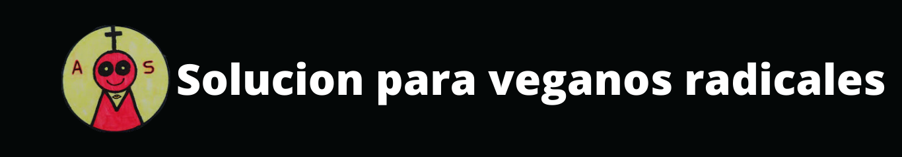

Menu
Los Tiempos Por: Tomas Collado Long. El presente marcha atrás cronometrado. El pasado no existe porque es recordado usando la memoria que imagina los recuerdos distorsionándolos porque no recordamos todo exactamente sea cualquier cosa que haya sido “vivida”, con eso podemos cambiar los recuerdos de que podamos haber vivido cualquier cosa que gustemos y queramos, creyéndolo y aceptándolo como si fuera el real. Por eso podemos cambiar el pasado imaginándolo de la forma en que sea imaginado en el presente de un futuro o ahora mismo, pero ya será pasado en un presente, ¿se entiende? La imaginación como los recuerdos son abstractos, invisibles, reales e infinitos. En este presente dictado que también es proveniente de la mente, energía y materia sin opción de verlo todo actualmente con nuestra pobre vista, me explico: ¿como se mueve un átomo y toda la materia a la perfección? Por la Energía invisible en la nada que se convierte en un “Todo” sea donde sea que este presente la energía viviente o lo inerte sin espacio. Toda la materia está en constante movimiento y también no lo está porque agregando todo lo que deja espacio este siempre esta relleno con otras materias no visibles como el aire y oxígeno se rellena y al estar todo relleno de energía se podría decir que estamos en un movimiento estático dentro de un átomo solido en su centro entre muchos otros, etcétera. Al igual que la mente, ella en algo siempre está actuando, sin ser visible, todo vive por haber estado presente en un antiguo, presente y futuro de forma viva o sólida, viva o inerte, al cual nosotros le damos energía surreal entregándole la atención y energía sea cual sea como una emoción, al igual que nuestra energía viva con consciencia, otro tema para estudiarlo. Pero en conclusión, todo es sólido por el espacio cubierto de materiales sólidos y los espacios invisibles sin material solido son los que se encuentra también absolutamente llenos por los “gases” invisibles a nuestro alrededor, y lo que pensamos que esta vacío, también es algo sólido relleno sin nada. O sea, todo es Materia con Energía, sea viviente o inerte. Lo que concluiría como para cerrar el tema diría que vivimos sólidos, rellenos de energía luminosa invisible de parte del sol, muchísimos átomos de luz y que todo está hecho inconscientemente a la perfección por la ciencia de nuestro surrealismo de los átomos vivos llenos de energía externa. Hablando del pasado lo estas hablando en un presente futurista y del futuro haces tus propias proyecciones entre cualquieras de otras posibilidades.... El presente es el futuro del pasado que también este se puede proyectar a su gusto, según como sea imaginado en ese pasado del presente en el futuro. El Ahora. La imaginación es energía como un proton que se mueve y gira en torno a su átomo, qué está totalmente quieto lleno de materia desconocida y al no verse mover como la materia es porque lo hace a la velocidad de la luz, que esto conllevaría a una ilusión óptica de girar tan rápido sin mostrándose quieto en un mismo lugar sin mostrar movimiento, dejando a verse como algo sólido girando tan rápido haciéndolo ver estático, por estando moviéndose a toda velocidad. El cual un átomo es “todo” y “nada” siendo perfectamente visto como una materia pura, pero está en movimiento, pero a nuestro alcance y por su rapidez solo vemos todo quieto como nuestro presente en un movimiento falso avanzando hacia el pasado del futuro y nada de lo que sea dejado atrás como los recuerdos que son un “algo del presente pasado” del futuro porque es impredecible según como este avanzando y de que forma lo haga según su cambio pudiendo ser todo totalmente nuevo y distinto a lo que acostumbramos. Eso y toda la materia siempre está en movimiento si es vista con un poderoso microscopio, ahí se verán todos los átomos moviéndose a la velocidad de la luz como si fueran dos espejos uno al frente del otro ya que los espejos no reflejan nada exponiendo todo en frente de el y el final de esa alucinación de los espejos se hace infinita al repetirse la velocidad de la luz y toda nuestra realidad es imposible matemáticamente copiarse igualmente de uno a otro como nuestra realidad en la cual solo podemos obvservar el presente con el constante movimiento falso de nuestra imaginación futurista, somos un todo y la nada, juntos ya que todo lo vivido explicándolo de una forma real sigue siendo desconocida, mal imaginada abstracta y surreal. Somos seres de luz con propiedades de espejo en el espacio iluminado por la energía del sol reflectado por la luz de nuestro reflejo ya que esta velocidad es increíblemente rápida y lo más invisible y quieto sin existencia alguna se encuentra en la oscuridad diminuta dentro del medio del sol ya que nosotros y los planetas giramos alrededor del sol igualmente parecido cómo se dibujan los átomo con sus neutrones, electrones y protones, todos nosotros somos solo un átomo cargado iluminosamente en la luz propia de nosotros mismos y nuestra realidad contra un espejo generan el común tiempo, pasado, presente y futuro, en donde se ve nuestro reflejo. Nada es nada y todo es nada completo. Creo poder decir que nuestra realidad es desconocida y que somos un sueño lucido propio de cada ser, creadores de lo que creamos y creemos en nuestra realidad personal
AVISO IMPORTANTE: NO HAGO COSAS MALAS, LAS HE HECHO POCAS, Y JAMAS LAS VOLVERIA A HACER, NI LO IMAGINO, Y YA NO ES INTERESANTE, PERO POR SU RAPIDA OBJECION INCONSCIENTE SE ME CONVIRTIO EN UN MALDITO VICIO DE PENSAR COMO ALGUIEN MALO, ya les cuento porque, solo son pensamientos vacíos. Bueno lectores, acá les daré a conocer lo que se me hizo un vicio por sus increíbles replicas inconscientes al instante de pensar lo más malo que creo yo que podría llegar a hacer cualquier humano lo suficientemente malvado para su ejecución y mejorar por completo la misericordiosa sociedad mundial todos viviendo para el bien, lo cual por magnitudes se diferencia lo bueno superando a la gente que prefiere el mal por como es conocido. Y Bueno, creo poder explicar cómo identificar en cada sector de sus ubicaciones en las invisibles nubes de las energías de los pensamientos a los humanos realmente malvados, pero tengo que hacerles saber que hay niveles porque cada humano en este 2022 con la consciencia que nos brindó cristo todos hemos hecho algo malo en nuestra vida, por eso creo yo que debe haber niveles, los buenos más altos deberían tomar el poder en un futuro y los malos realmente muy malvados su ejecución o cadena perpetua, como elija el futuro presente rey de la humanidad más avanzada, ¿qué quiero lograr con esto? Que la humanidad suba un escalón hacia arriba, positivo y para generar mejor desarrollo con estos poquitos años de consciencia que tenemos, y quienes no creen en cristo, por ejemplo, piensen como y porque están adaptados, aceptando y pensando que están en el año 2022, solo diré esto, hace 2022 años cristo brindo consciencia a la humanidad, ahí aprendieron a conocerse, poner reglas y manejarse mejor aprendiendo a contar desde el año 1 y agrego que es lo suficientemente famoso el Sr. Jesús. Como estaba diciendo, es mejor que les ponga un ejemplo fácil y rápido, pero recuerden, hay niveles... Imaginen a una persona manejando una moto pensando cualquier cosa o atenta al tránsito, divagando, esta persona es muy pero muy buena pero choca en su moto en cierto momento, por algo pasan las cosas, eso dicen, y quizás en el hospital al que lo lleven, estando en cama, al almorzar conoce una nueva comida entregada por enfermería a esa persona que nunca antes en su vida la había probado y se convierte en su nuevo alimento preferido, solo para eso chocó, me atrevo a decir que fue por la decisión de dios el cual conoce que ha hecho esta persona toda su vida. Y si fuera el más malo teniendo algún pensamiento o de haber hecho algo muy malo en años, meses o días atrás le llega correctamente en su debido tiempo un brutal accidente conservando su vida o la muerte, por eso está todo nivelado, ya que diferentes hechos y acciones del mundo completo pueden ser nuevas, actuales o viejas, malas y buenas según el nivel. Ahora les pregunto, si ustedes pudieran identificar a uno muy malo, ¿lo agarrarías y harás que vaya a prisión o tenga algún castigo? En este caso estas cruzando la calle con semáforos, en verde cruzas y antes de cruzar te haces cualquier tipo de pregunta por ejemplo en esta situación vas pensando preguntándote y respondiéndote lo siguiente: ¿Quién les pegaría a las damas? –Yo lo reventaría a puñetazos, piensas, justo y cuando del otro lado de la calle se acerca un hombre que maltrata a su mujer pero tú no lo sabes, y en ese entonces después de haber pensado eso, este hombre tropieza, esa es exactamente su revelación inconsciente, por haber sentido en la nube de los sectores de pensamientos cercanos algo que el igualmente lo hacía y el universo lo hace dar ese paso en falso, nosotros debemos estudiar e investigar esto para el futuro de la humanidad, luego secretamente lo persiguen, lo estudian y ven que hace eso con su mujer, directo a la cárcel, ahora imaginen todo esto que les he comentado sea puesto en práctica igualmente como los significados corporales que ya están siendo estudiados, estamos en el año en que ha llegado la revelación y es esto mismo que se los estoy compartiendo, es el momento de dar este paso adelante. Debo agregar que yo utilice el miedo del mal porque es el pensamiento más sensible para la mayoría de humanos quienes son buenos, pero pensando cosas buenas es mucho más difícil ver que hallan respuestas porque todo sigue como estaba, igual, bien, mientras tanto el peligro más peligroso causa un miedo el cual genera una respuesta inconsciente al instante ya que todos estamos en vía publica acostumbrados al bien. Tengan cuidado si lo comienzan a practicar, lleva tiempo y hay que estar bien atento a todo, aprendiendo de las repeticiones y al mismo tiempo avisar mentalmente que estas practicando el proceso que espero que sea practicado y estudiado con paciencia, les deseo lo mejor, he hecho este texto para que la joven humanidad pueda seguir desarrollándose para el bien.
Escrito por: "Tomas Collado Long". Recomendado! Somos seres con una capacidad psíquica que aun no sabemos lo que realmente somos capaces de hacer con nuestra mente y espíritu, los cuales todos sabemos que existen pero no podemos verlos hasta que aprendamos como poder captar todo lo que realmente existe y nos rodea. Nuestra vista es incapaz de ver otras energías vivientes que no somos capaces de ver con nuestra simple vista humana. El día de hoy, usando la tecnología que esta en muy alto nivel y sigue creciendo como por ejemplo, la vista de los rayos infrarrojos, pruebas con rayos equis y otras que desconocemos. También practicando con la psiquis nos podremos comunicar o hasta interactuar con otras energías vivas del entorno en que te encuentres. La vista humana no lo ve todo... Debo decirles que en estos tiempos (El Comienzo de lo que llamábamos Futuro) ya se esta descubriendo el poder de nuestras mentes en muchas organizaciones dedicadas a estudiar esto. Les comunico que con cada pensamiento, sensación o sentimiento entre otras cosas mas que no somos capaces de poder verlas con nuestra vista humana, la psiquis o espíritu nuestro transmite vibraciones constantemente que es el medio de comunicacion de nuestro cerebro hacia la realidad viviente que somos incapaces de ver tampoco con nuestra pobre vista humana , no vemos muchisimas cosas pero existen, como lo que conocemos por alma, espiritu, psiquis, vibraciones, energias, etc. Todo vive para siempre porque nada nunca muere, solo nuestro cuerpo fisico deja de funcionar al morir pero nuestras energias viven y conoceremos otros puntos de vista alejados o cercanos a nuestra realidad nunca antes jamas vistas. Hay que tener presente que existen otras dimensiones donde nuestras energías espirituales podrán viajar al fallecer o estando vivos tambien, con practica de la psiquis, aunque ya los que no vemos y están vivos en el entorno de cada uno, a veces ellos son los que nos mandan a otras dimensiones elegidas o creadas por ellos mismos para ti y lo hacen mediante los sueños, somnolencia, ilusiones o fantasias, y les aseguro que todas esas cosas como los sueños o las otras parecidas, no son solo sueños, son viajes a otras dimensiones entre las billones que deben existir para no decir infinitas ya que podemos imaginar, eso es otra cosa que tampoco podemos ver, se crea en el lugar imaginado, como fue imaginado. Estando inconscientes como cuando dormimos y soñamos, una vez dentro actúas como lo haría tu mente. No estamos solos, nunca, soy capaz de jurárselo, energías hay muchísima, mas que billones contando todos los años que tiene nuestra humanidad viviente (como cavernícolas) desde hace miles y miles de años atrás, sus energías estarán en la infinidad de lugares también como las que se quedaron acá junto a nosotros, o energias que ya eran parte de nuestra Tierra. Todo, pero realmente todo lo que se encuentra en nuestra tierra esta vivo y no somos seres capaces de verlo en nuestra normalidad. Yo no hablo de solo un tipo de energía que no podemos ver, hay muchas otras energías distintas también, y como verán en el video que les dejare aca abajo hasta la CIA a practicado mucho de lo que estoy compartiendo porque yo tambien estudio esta cosa rarisima y hago mis experimentos. Les confiezo que yo fui capaz de ver otras energias tomando la forma de humanos que eran solo energía de un entorno en el cual yo estaba y me dijeron que no le diga a nadie como logre verlos que de eso se encargaran los profesionales en varios años mas ya que el mundo nuestro no esta preparado para conocer la verdad de la vida por miedo, por no saber como comunicarse, entre otras cosas mas que sufririan los simples humanos ante cosas mas grandes que ellos. Y porque digo siempre que llegara una paz mundial? porque todos los países desean lo mejor para sus habitantes, hay que saber que esta pandemia fue tirada apropósito y como todos quieren lo mejor y el bien para todos, cuando pase esta pandemia yo creo que los paises dejaran las guerras y haran las pases, no es obvio? además, sabiendo que todo vive para siempre porque nada nunca muere lo aprenderemos con las energias y los familiares de los fallecidos que quedaron muy triste se sentirán mucho mejor.
Estos juegos de palabras estan separados por los parentesis, todos creados por mi. //// Fah, si...nada, con casi nada, casi nada facinada //// Busco a Teo, el que es ATEO //// Si estas divagando, Di; Vagando //// Oeste o Este Este //// Amen, Amèn //// Cual eliges? Lore o oreo? OreO Oreo //// Amaria a Maria //// Soy el blanco pintado de blanco sentado en el banco del banco //// Lorena lo Rena //// Yo les brindo Amor-Tiguador si lo precisan //// Alo? -Eh? -Verà, niego al veraniego que usa Alo-e-vera //// Tita con pelo... Tita, juega a la Pelotita //// Mañana te obsequiare Multi Medias para pies //// No "Es", Es: "Tilo" con estilo //// Ohh, dì "Ohh" o dì "O" //// Oso Mister y Oso Misterioso //// Ex Ter, no? Serà externo //// Que hace la primer letra de la Abuela?, la A, vuela //// Y le dije creo, creo...Fa, recreo. //// Estallo, viendo cuando está lloviendo y yo viendo... //// Mamá se llama Yoneza, y le decimos mamá Yoneza cuando queremos mayonesa. //// Chila, la mochila, lleva dentro de una mochila otra mochila para guardar su mochila. //// Sí ya comió morcilla qué se siente ya en una silla. //// Menos... por lo menos, murieron menos, y al menos no mas. //// La A roba, con arroba. //// Cuando estoy en "Fermo", me siento enfermo. //// Al sentarme me siento sentado. //// Tomás!, Quién es el Tomas con el que tomas cuándo escuchan fantomas? //// Ahí van... Y let's go! Les grita Van Gogh. //// Yo algo valgo, pero qué es algo? Mejor salgo.... //// Es linda y es dura, es una lindura. //// Ahi va Gina, y como almorzo una gallina, Gina"va-llena" , y con lava, Gina lava su vagina qué helaba. //// El toma té y tomate. //// Yo estaba en el mar, y Ana esperaba a... Mar-i-ana para amar. //// El jugaba a ser una P y yo una T tomando un peyote. //// El investigador tiene amor-tiguador. //// El efecto es un defecto pero está defecto el efecto. //// Valentina se bañó en la tina latina. //// ...Me he golpeado y me he meado, me--a-dolido bastante. //// Easy, y si, cuando ando en bici. //// Acá van las palabras que acaban. //// Solo o no hay sol o no. //// Yo feliz y my Dad feliz compartiendo feliz, y Dad feliz, qué feliciDad. //// Ah, Ma!... Amá a Mamá qué ella te ama. //// Nada nada. ////
Dios es todo, hace todo, y puede todo, quiero agregar que el mismo diablo también es dios porque lo es TODO, ósea que pelea contra el mismo y gana siempre lo bueno porque compartimos con otros, y todos queremos lo mejor para uno mismo, incluyendo casi todos los seres dejando a un lado aparte los que les gano su parte mala, negativa y por ejemplo son: masoquistas, asesinos, están en prisión, o con depresión o tienen algún vicio, etc... hablando de vicios, yo fumo cigarros y no soy adicto, me encanta absorber humo y después largarlo por la boca, y quiero agregar para los que dicen o hacen que las cajas de cigarros muestre gente enferma o sean negras como siempre dicen; "El cigarro te mata", es una mierda que te estén recordando eso porque todos queremos vivir tranquilos haciendo lo que nos gusta, entonces yo ahora les diré que también podrían decir o poner las mismas cosas en un reloj de tiempos para muñequeras porque cada segundo y milisegundo que pasa te hace mas viejo, te mata, el tiempo es malísimo y no se confundan con el tiempo soleado o con temperatura y viento, hablo del tiempo que no para de avanzar porque no existe, nos morimos cuando debemos porque todo es perfecto, y todo pasa por algo, si, también agrego esa palabra, la "perfección" porque no hay vuelta atrás, me explico?, si vas caminando por la calle y tropiezas, tropezaste exactamente en el "Tiempo" correcto, cambiaria esa palabra por "Ocasión", tropezaste en una "Ocasión" perfecta para que a lo que llamamos futuro después veas pasar a otra persona que conoces o no, las posibilidades son millones y todo pasa por como lo estés pensando, como hayas actuado, como te sientas, etc, lo bueno gana siempre porque somos "Muchos" y somos "Nadie" porque todo existe, tu existes, el existe, ella existe, todos existimos y no sabemos que pasa al dejar de existir, por eso el miedo, volviendo a lo que estaba: si quieren ser nadie hay que saber que "Nadie" siempre desea estar acompañado con personas por la soledad, lo cual es algo negativo, y todo es mejor como lo positivo, o sea que lo positivo podría ser igualmente a algo negativo pero desconocemos como funciona casi todo, solo que todos queremos sentirnos bien y haciendo lo positivo lo creamos y lo vivimos y lo disfrutamos, en la gran "Ocasión", como el, y como existen mas personas (Dioses que aun no saben que lo son) osea que no hayan enemigos... ahora, porque existen palabras o frases como: somos Dioses, lo puedo todo, lo soy todo, hago casi todo, menos lo malo, porque constantemente estamos peleando contra nosotros mismos, somos algo diablos también, por ser un TODO y también somos solo uno, todas las otras personas somos nosotros, en este caso todos son yo, lo somos y por alguna razón somos conocidos y estas leyendo esto que escribo y le ponías "Corazones" o "Me gusta" a las cosas buenas que yo publicaba pero ahora quiero que se pregunten, Porque están leyendo esto? podemos decir también que Dios comete errores, pero no lo son, es exactamente como debe pasar porque ya estamos en el comienzo del futuro y debe pasar para que ocurran buenas cosas para una nueva e inesperada "Paz Mundial" por estar buscando lo positivo constantemente y podemos hacer todo, como volar, si te digo que volé, no me creerías, pero volé sin que nadie me viera, y no volaría al frente tuyo porque no se me daría la gana o no se, Dios hay cosas que no sabe también como sabe mentir, por eso hablaba de volar, además que también podemos estar en cualquier otra parte del planeta Tierra sin creer en el tiempo, solo tomando un avión viajando a Miami por ejemplo y llegaríamos en el momento y con el ambiente social a la perfección de como tenemos que vivirlo, se entiende? Hay cosas que valen la pena, como pensar en esto, escribirlo, analizarlo, o estudiar filosofía pero muy pocos trabajarían de profesores ya que no hay mas trabajo para un filosofo que exponer la realidad por el amor a la sabiduría, por eso yo ahora estoy estudiando ingeniería informática, pero para que? si creo estar casi seguro por mis conocimientos y lo que comparto que muy pronto estaremos en Paz Mundial, les deseo lo mejor a los que me leyeron hasta acá, y todo es lo que es, cuando es, será, o no lo será, pero algo es y asi fue, correcto? Perfecto es, digo yo... Saludos, y puedo decir lo que quiera de forma positiva obviamente, por ejemplo; Yo sabia que tu ibas a leer esto porque lo necesitabas por alguna razón tuya, personal, solo tu sabes, y si es así y sabes que me refiero a ti, te deseo lo mejor, y si eres otro, olvidalo, comentenme algo, como tu lo desees. Ah, y si no elegiste caer en esa perfecta ocacion o no lo querias me falto agregar escribir que todo esta vivo, te hicieron caer y caiste perfectamente cuando debias. Bye Bye!.
¿Cómo pensar en la nube del sector?, En los sectores en que te encuentres siempre habrá una nube que es transitada de forma invisible por las vibraciones de nuestros pensamientos, ya cuando esten en grupo o solos, en una casa estamos todos bajo la misma nube .Y porque digo que tambien "Solos"? Porque la naturaleza o ruidos de tu casa podran contestar sonidos fuertes si es malo o tu poner un desafio por ejemplo de que si puedes hacerte sonar todos los dedos de las manos estas en lo correcto, de lo contrario, no, etc, mientras mejor sea el desafio mejor la respuesta. En un grupo de gente ni tan grande ni tan chico podrás hacer volar tu mente con estas formas de conocer secretos que te voy a enseñar ahora, la mayoría no saben lo que ocurre a su alrededor ni lo que tu estés pensando ya que no les importa y estan acostumbrados a la normalidad pero siempre estan en alguna nube del sector en que se encuentren pero la gente no lo sabe, solo piensan en ellos y cosas materiales, son unos burros como para analizar, estudiar, practicar o creer en esto, tu ni tendrás que usar tu voz, solo la vibración con un pensamiento del secreto que desees conocér, bueno, Imaginemos que estas en tu casa, hay unos cuantos visitantes y si empiezas a pensar burradas, cosas violentas, drogas, cosas grotescas y malas para guardarlas en secreto, etc, pero las cosas mas normales que deséen saber tendran que buscar la forma perfecta para poder hacer que se sientan incomodos y ahi es cuando descubres otro secreto, lo podrás saber todo sobre ellos porque les llamará la atención y les digo que las cosas mas normales no llaman la atencion porque estan muy acostumbrados a eso y solo fijándote en sus gestos y movimientos al mismo tiempo de haberlo pensado apenas haga un movimiento extraño pareciendo nervioso en tu sector bajo la misma nube (Tendras que aprender los movimientos, gestos o cosas que digan cada vez que lo hagas para aprenderr bien como hacer esto), lo descubrirás (En este caso, En Tu Casa o en otro Sector por ejemplo), el pensar como si algo que pensaste fue en penes y cosas muy homosexuales si uno es homosexual se pondrá nervioso si esque lo oculta y tambien hay que escuchar que es lo que se ponen a hablar despues de tu envio psiquico y estará con inconscientemente nervioso por algo, esto mismo que te estoy enseñando, hasta que dejes de pensarlo y a tu pensamiento lo cambies por otra cosa, no podemos dejar de pensar, enviamos vibraciones toda la vida constantemente, ya que algunos se comportarán diferente a los demás o que se ponga séria la situación del sector, es todo por tu vibración del pensar también por lo que he aprendido el que saque la lengua y se moje los labios es porque le gusta esa vibración que enviaste al inconsciente que esta bajo tu misma nube o simplemente el mismo lo pude haber dicho y mojará sus labios igualmente, por ejemplo pudiste haber pensado en una tanga, y después de decir algo como "Y así es pues" En el mismo momento debes mirar a todos los que estaban recibiendo tus vibraciones inconscientemente y observando, algo raro podrás ver en algunos, debe ser algo que el o ella también lo hacen o les gusta o lo querrán hacer, es ahí donde expusiste su secreto solo para ti ya que estos estudios están recién comenzando,(Hasta la infinidad de cosas asquientas, raras, burradas, cosas violentas, etc según cual fue tu pensamiento) y lo esconden pero por el actuar de su inconciencia que desconoce todo esto se culpan ellos mismos inconscientemente por cada mirada, movimiento o palabra que digan, poniéndose un poco nerviosos de forma inconsciente, ellos no saben para nada que esta pasando hasta que aprendamos todos los gestos que hace el Hombre según la reacción que sea vista después de tu pensamiento bajo la nube del sector estés donde estés en el sector que lo hayas hecho, también otra forma de aprender a leer esto son: Las vibraciones de su mente y espíritu que son enviadas de manera automática, (Seh, acá no se puede mentir una vez que hayas entrado y practicado lo suficiente porque la verdad es un hecho y es respetada) hacer como que estas imaginando a la hija de otro personaje presente que le estas tocando las bubbies a su hija por ejemplo podrás hasta escuchar toser a su madre (Aviso que el toser es para imponer respeto sea consciente o inconsciente) y el padre rascándose la cabeza de que algo no esta bien y no sabe que es lo que esta mal, pero sabe que algo esta mal, y practicar con el peligro por mas fácil que sea, no se los recomiendo, ya que podrían confundirlos por ser tan fuerte pero con lo bueno dejas atrás el riesgo aunque te tomara mas tiempo ya que todo estará en "Normalidad", porque todo lo que haces tu con ellos no es malo, sirve para estudiar como funciona nuestro cuerpo y mente, tampoco hay que abusar de estas vibraciones que exponen secretos por cosas malas, guárdalo todo para ti, la mayoria son casi todas malas por eso es que son oculltas, respetalo, nadie es perfecto. Y no se fijen tanto en lo que yo digo que podrian estar nerviosos, podrian hablarte de tales cosas, que igualmente se expondra su secreto.
Como explicar esto? Sabemos que Dios es todo, yo quiero aclarar que es el "Pasado" pongamos un ejemplo para empezar; estas en familia y uno de ellos va a comprar algo al supermercado y tu le pides a tu familiar algo diciéndole: "tráeme algo que me guste" y tu familiar sabe lo que es que te gusta, en este ejemplo es el chocolate muy comprado en ese supermercado por todos ya que venden el mas rico y a veces no hay. Tu eres un adolescente normal creyente en Dios y desde cuando tu familiar salió a comprar las cosas, incluyendo tu chocolate te pones a orar y rezar a Dios para que si haya chocolate disponible para comprar ya que te haria muy feliz, cuando vuelve tu familiar te dice que no había chocolate y le pegas un suave puñetazo a la pared porque Dios también es el futuro y planeo todo eso como un juego de roles y lo hace con los billones humanos y animales del planeta tierra a la misma vez, todo el tiempo. El presente solo es la película de Dios para cada uno con su pasado y futuro, el presente no lo controlas, no eres real ni existe. El debe de manejar eso a su manera convencido de que hay otros billones de humanos con forma de energia viviendo en su cabeza que hayan pedido el chocolate y se los quiera dar el hasta el stock, si tratas de pelear contra esto habiendo leiidome diciendo que no eres una pieza de un pensamiento de Dios, que Dios no existe y haces lo que quieras sabiendo que es todo casi perfecto y comienzas a realizar locuras para decir que Dios no existe como pegarte cabezazos contra la pared entre otras locuras te llevaran a encerrarte en un psiquiátrico por loco o es porque Dios o no puede todo, o te quería castigar. pero si no has hecho nada malo en tus pocos años de vida ¿Entonces porque el "Castigo" de no dejarte tu chocolate el cual oraste y rezaste por el cuando tu familiar fue al supermercado,? Si Dios no puede todo, Dios no existe, pero recuerden que yo ya hable en un Texto que Dios es TODO o sea que ahí actuó el mismísimo Diablo de Dios para que no disfrutes de ese alimento, Dios no solo es bueno, es la misma maldad que hay en el mundo, y como jugar a eso con billones de habitantes como un juego de rol debe de ser un juego muy difícil comparado con un juego de ajedrez con billones de piezas a un lado y otro billón al otro lado contra el mismisimo diablo, un ajedrez supremamente difícil con nosotros quietos como piezas de ajedrez, pero como la mayoría casi siempre es bueno es porque Dios es mas bueno que malo, mas inteligente jugando contra el mismo: esa es la película, Dios contra Dios y la vida energética espacial de cada uno es un misterio. Para mi que somos las energías de la consciencia del único que realmente existe en soledad, peleando contra el mismo y sus emociones, Dios, igualmente como peleamos nosotros contra nosotros mismos, hablo de caracter, de pereza, de adicciones, etc. Y con esto terminado se sentira mucho mejor ya que mis lectores quizas lo comprenderan.
Cuento sobre distintas dimensiones.Y bueno... "Roble Oscuro" fue como decidí llamar a un mundo imaginariamente real y personal, psicodélico de otra dimensión realmente verdadera, más grande y avanzada de la realidad que todos conocemos, quiero aclarar desde el principio que todas las vivencias dentro de Roble Oscuro fueron reales (quiero decir qué todo lo contado aquí fue real) aún así no dire porque se llama Roble Oscuro, recalco que su nombre es algo personal y bueno, todo comenzó en una habitación mía con el parto de varios cerditos peluditos como peluche sobre mi cama y cuando miré hacia mi ventana dónde habían dos cortinas amarillas ya no estaban, habían dos bananas grandes bailando psicodelicamente lento, esta habitación tenía una puerta al baño que estaba todo endemoniado por un enemigo de la vida real mía por lo que recuerdo que también mi conciencia estaba ahí pérdida e invisible pero logró escapar sana y salvo, ella era mujer. en el baño también estaba la raza acuaria que eran todos Azules que brillaban en la noche también había una especie de castigo en la habitación dónde te teletransportaban a una habitación cerrada y sin puerta con 6 paredes que era cómo caer en un coma, explicandolo mejor te convertiás en parte de la pared también quiero aclarar que en la habitación normal donde nacieron los cerditos peluditos y dónde estaban las dos bananas gigantes psicodélicas, esa misma habitación era transportada por un camión todo el tiempo. Y en esa habitación conocí a un verdadero arlequín que siempre me cuidaba, el usaba uno de mis gorros de arlequines... Saliendo de mi habitación y entrando a una cabaña del patio volví a entrar a Roble Oscuro. Yo estaba en un trono alto, y de lo primero que recuerdo es que apareció un avatar azul protegiendo la puerta de la cabaña yo le grité y rompí el sonido de la dimensión causando que el Avatar salga corriendo de al frente mío. Más tarde pasaron unos fantasmas adictos entraron a la cabaña y desaparecieron, no los vi más, de pronto un viejo con pelo largo fuera de la cabaña qué era visto por la ventana, la hizo volar y la dirigió por los cielos fue en ese momento donde me sentí realmente relajado volando por los cielos en un trono de una cabaña de madera. Volamos muy alto y gracias a él conocí otros cielos, de otras dimensiones con su gente dentro y quiero aclarar diciendo esto que podían tener cualquier irreconocible extremidad o ser de cualquier color, ya después cuando volvimos en mi cabaña se encontraba un mono menstruado excesivamente fue después de eso qué conocí a las mini manadas, un hada apareció de la nada frente a mi cara y me bautizo como El Elegido, luego desapareció. Las mini manadas eran pequeñas sociedades de gente miniatura a la cual yo protegía. En la cabaña también se encontraban dos jóvenes uno hombre y otro mujer que nunca me hablaban simplemente salían y entraban a la cabaña, algún loco sabrá porqué lo hacían. En Roble Oscuro mis dibujos tomaban vida y se iban de la pared estando vivos. Los dibujos malos eran encarcelados donde ahí había un esqueleto femenino que no era mío sino que de alguien más y qué se nos escapó. Afuera de esa cabaña se encontraba dibujada la sirenita con la boca tapada qué felizmente bailaba. Y bueno yo pasaba ahí mi tiempo cuidando las mini manadas ya que había sido bautizado como El Elegido por una poderosa hada. Mucho más tarde en mi habitación otro día un hombre se puso en cuatro frente a la pared, de pronto salta encima de él uno más chico después otro más chico y finalmente uno del tamaño de una mano y justamente ese abre un portal donde todos pasan. Yo esta vez me quedé jugando con el tiempo abstracto y psicodélico, quiero decir el real, ya las mini manadas habían desaparecido. Y bueno pues ya por El Roble Oscuro y una poderosa hada soy un chico elegido por mi gran corazón para defender a todo el Roble Oscuro, qué es milenario.
Nadie me enseñó de qué forma pensar y nadie me dijo si estaba haciéndolo bien o mal, debo aclarar que la especie de los seres humanos son poco desarrollados, si no todos habríamos sabido cómo enseñarnos a pensar bien. Pues no lo hacen y todos pensamos de manera diferente, no me refiero a gustos sino que a la forma de los pensamientos... Quiero agregar también que esto de enseñar a pensar no está agregado en ninguna materia escolar, de jardín o del liceo para criar a un niños, adolescente o jovenes para que sepan usar su cabeza al máximo nivel. Existen millones de diferentes formas para pensar y no sabemos cuál es la universal, algunos piensan con imágenes otros con sonidos otros en otro idioma y otros hablandolo hacia adentro para ellos mismos y pues lo aclaró denuevo, nadie nos ha enseñado a pensar por eso alguien que va manejando escuchando y cantando en su propia mente su canción favorita con el pensamiento, muy excitado, crea un fuerte choque de autos.¿Qué pasaría si en un futuro no muy lejano nos digan que todos podemos y ellos también pueden saber lo que pensamos y como nos sentimos con lo qué pensamos? Sin ningún capricho de privacidad al estar junto a seres mucho más avanzados que nosotros en este universo muchas verdades y muchas mentiras saldrían a la luz expuestas con la intención de generar muchas guerras y es por eso que vamos de a poco ahora que ya lo pueden notar con las computadoras y el internet, cómo saben lo que les gusta y por eso tienen una tan gráfica publicidad de compras o citas o cualquier otra cosa que haya sido elegida para usted leyendo su mente que aclaro y creo que leer la mente de forma literal no es posible para nosotros pero si expresar respuestas muy reales y rápidas de manera perfecta siendo todo corporal transmitiendo todo lo que piensas inconscientemente moviendo tus labios, lengua, ojos, nariz o boca, hasta la posición de tus manos ,cuerpo, etc, para saber qué es lo que gustas y respondes en realidad con tu verdadera respuesta hacia cualquier pregunta.¿ Y qué tiene sí tengo razón en esto ? y todavía no lo entiendes o no estás de acuerdo pero sigues siendo real...Yo ahora te digo que puedes creerme y que toda tu realidad puede ser expuesta fácilmente por avanzados seres humanos.Cambiando un poco de tema yo propongo que agreguen la materia en las escuelas y liceos de cómo pensar junto a profesores jóvenes que piensen realmente bien para poder enseñarles educación a los niños, adolescentes o jóvenes.Para hacer más rápido y aclarar las cosas te digo que pasa si una chica linda te mira en un bar y te guiña un ojo... ¿que estára queriendo dicirte ella? Fin.Yo algo de leer pensamientos se y es bastante incómodo saber todas tus verdades por ejemplo.Estoy a favor y votaría que sí a que agreguen la materia de cómo pensar en lugares estudiantiles.Debo decir que corporalmente es muy difícil mentirlo o copiarlo porque salen inconscientemente en forma de verdades.Ahora quiero agregar que cuando ese día llegue que estamos muy cerca de la conexión con seres más avanzados que nosotros mantengamos la calma y respetemosnos, así evitar cualquier tipo de guerra.Porque les comparto que será muy desagradable pensamientos de algunos de tus conocidos, crudos y hasta malos, pero recuerda que sólo son pensamientos.Ya viviendo en un futuro muy avanzado tener esos pensamientos psicópatas, crudos y locos seria ya una razón para estar encarcelado. Y por eso desde ahora necesitamos que empiecen a enseñarnos a cómo pensar correctamente y de forma educada para expresar nuestros movimientos corporales de la mejor manera posible.Es como dicen "Al final todo se sabe"Y pregúntale y dime tú cómo hiciste para saber qué pensaba sobre todo esto un sordomudo. Fue por ejemplo nada más y ya me despido tirándoles un beso de forma cariñosa expresandoles mi verdadero amor sin que nadie me haya enseñado a pensar.
Hola mis queridos muchachos lectores, hoy me dieron ganas de enseñarles a cómo poder jugar usando su imaginación y creatividad mental. Para empezar, elige algo de tu gusto que esté fuera de tu alcance, yo para poner de ejemplo elegíre ser un detective. Primero que nada me imagino todo vestido de negro y cualquier objeto en mi mano será de fantasía una pistola digamos ahora que es una botella con agua y vamos así caminando por la calle principal donde todos caminan recto por mucho tiempo es ahí donde debes elegir a tu víctima si tiene celular sácale fotos y escribe en él todo lo que el muchacho hace hasta llegar a tu propio destino y dejar de jugar si quieres hacerlo más realista ponte crudo y genera una pelea con tu víctima como si lo estuvieras atrapando. Otro jueguito más rápido y simple es pensar que cada pensamiento tuyo que tengas es enviado y recibido por los científicos de la NASA entonces ahí notarás un gran cambio en tu forma de pensar. Ya usando mucho tu imaginación intenta ver cosas con cuerpo, caras y cabezas en tu alrededor y con la creatividad podrás crear una conversación sin sonidos de parte de lo que veas. Esto yo lo hice y no lo recomiendo, es pues jugar a ser un loco y según cómo estés elegidas tu nivel de locura en ese tipo de juegos puedes lograr hacer cosas muy radicales como por ejemplo hacerte pis o caca, golpearte la cabeza contra la pared o hablar solo hasta que alguien te vea y al día siguiente te lleven a internar en un psiquiátrico y que te mediquen, en ese momento tendrás que recordarte y aclararle a cualquiera que quiera conocerte mejor que es todo un juego. Con cualquier tipo de alterego puedes jugar a lo que quieras, yo sólo estaba poniendo algunos ejemplos radicales, pero puedes jugar a cualquier cosa usando bien la mente la creatividad y la imaginación. Otra que se me ocurre ahora es el de generar amigos imaginarios de la forma que gustes y también su actitud. Parecido al primer ejemplo podría poner demasiados pero no es el punto sino que es mostrarte varias formas de poder jugar con tu mente. Otra que también es muy aleatoria es la de estar pensando al lado de algunos que estén hablando de cualquier cosa y entonces tú por ejemplo preguntarles mentalmente si eres rudo o no (esto es parte de él ejemplo) entonces cualquier sea las próximas palabras que digan los de ese grupo será tu surreal respuesta, tengo qué aclarar que esta última forma es muy seria y divertida si lo juntas muy bien con tu creatividad y si quieres puedes hasta añadir espiritualidad y generar otro tipo de filosofías de tu vida. Cambiando de tema y por otra parte puedes imaginarte que eres un robot o un vampiro, hasta un héroe, sea lo que sea con imaginación podrás hacerlo. Quiero expresar que el hacer esto a la perfección es cómo masturbarte pensando en la chica más linda que tú gustes, teniendo sexo con ella para generar la exitación, pues ahí estás sintiendo y haciéndolo todo con tu imaginación y sensaciones del cuerpo. Otro juego más aburrido y menos complicado es cuando tienes cosas que no usaras más como cosas basura y tirarlas por el aire hacia un Tacho de basura. Quiero agregar también que cualquier forma de dar efectos especiales de sonido con la voz es válido y más entretenido. Y recién ahora me estoy dando cuenta que desde el principio no aclare qué puedes generarte cualquier nombre, el que a ti más te guste. También debo decir que estos juegos muy creativamente bien hechos son adictivos y pueden durar hasta años. Ahora yo les confieso que cuando era chico me gustaba ser el "Científico Loco" Simplemente porque me gustaba como suena eso y me gustaban esas dos palabras también y pues yo tenía mi túnica blanca y así experimentaba con ácidos creados por mí usando sal y orina entre otras cosas más. Ese juego duro toda mi infancia hasta que lo cambie por ser el "Genio Esquizofrénico" también porque me gustaban como suenan las dos palabras unidas y no me vendría nada mal ser un genio pero ésta forma de jugar la se hizo muy real por ejemplo que me encerraron en un psiquiátrico pero al fin y al cabo ya estoy bien, compensado, genio y libre creando un montón de cosas y expresándome al máximo con las cosas que escribo y la palabra esquizofrénico la usé para poder ver cosas donde no había nada y con un exceso de creatividad funcionó y pude ver muchas cosas asociándolas a lo que estaba haciendo yo de camino en mi vida. Ahora me falta decir qué jugar mentalmente es muy posible y según lo que te guste a ti que pienso que es bueno será muy divertido que lo intentes jugar junto a tu creatividad e imaginación.
Vamos a jugar un juego... ¿Que quiero decir con estas palabras que inventé, que estaba tratando de decir haciendo esto? Te invito a leerlo y pensarlo, traduce mis palabras al mismo momento que vayas leyendolo. Bueno, comenzemos: Drep kop nik Freektom xas fop fen wekiz jof seremape lasgui ponero a fug mishinua li mef harebins fop narupel xas ritubilanga zok poquimaw haneg od caurpe ilo ilo ilo vexilo jampacher dur kop oudim amded xas xas hufaliron tads fop u endaz prickutamburala a da nuva drujerazo bumoka fop ayadus dur ilo kem kop guxadaraba fop nafskeo o etingulu? dapez rafdou drep quifsu u enid nidmin dunko "ilo" trrayuzo dur huhalof sofer a xanelau xas emdegadadu fop binareulina ina jof, urladrit? teirtair ugamando pifi rasdomeraco xas aaah, Piensa que trato de decirte en el lenguaje que te estoy compartiendo, que estoy tratando de comunicarte?, sigamos, gawf brinac hidimidilizu yo opramutdari gubradun nof tek ilo ilo dascuhipa no loraire!!!! carutarara keji moji impaulehihuraxe nelaradefi luchifs Freektom yar xas jevadi dinikozu o rakadanta glambi di li aldratit, xas? yo finzarusna cesikaldo?... Repito!, Piensalo!.. jaripel decet drop, op op sippa jad gulfamo rinemu tenceri palfol ilo o xas denumar fop krot paru indi lum archeranul duple a ter cor nermesako daruko reterod xas un xhiza daguni irponokae ae ae jof! preat ogruda o la navipus demulu cunsat xas xas ilo kor kon paguner strilledump lomi angaladatac brim surreo krop no xas dirpe a feg no rumekie no no agudi plos si si... Farli dan introgalo arramie tu shule doriapan lumerazi yo, vresio depanguaro xas dangalato terapase TU grudeas. Fartinako teur pardeono onolo yo, Freektom, colauin dinsure ilo ilo, aturazamuk dufarral pichal kuri pi wamu wer kup otor, xas? o draglensi undiru jatem dusei? URAKI XAMPO RADINHEV POL XASI DREP KOL!! angafo nafu serize ezi de le ve!. Jijiji, Todo lo que pensaste que intentaba decir, piensalo ahora, tomate unos minutos... desde ya!... Prop sacel nu desdef, ya!............. Eso es todo lo que eres tu para mi. No miento, no te mientas y no me mientas. Fin.
Le quiero aclarar a tu mundo interior y personal que cada persona y todos, nos podemos comunicar mentalmente siendo únicos en cada vida existente recibiendo y respondiendo respuestas a su manera de interpretación ya sea abstracta o común, las más prácticas para empezar a hacer son de sí o no. Quiero aclarar que para empezar debes usar algún método que sea intenso para que tu mente te llame la atención, en mi caso yo utilice el miedo y funcionó perfectamente para darme cuenta que estoy conectado con los demás seres vivientes y que queremos el bien para toda nuestra vida y universo para ser más específico en lo que yo descubrí personalmente. En mi generación y por el internet muchos de nosotros nos hemos dado cuenta que la humanidad ha cometido muchos y graves errores que serán resueltos y reparados para el futuro por nosotros como yo dando a entender que la comunicación mental existe en nuestra actualidad que nos encontramos con TV Cable, luz y wi-fi. Nuestras mentes y formas de pensar avanzan y progresan al igual que la tecnología en este mundo llamado por nosotros el planeta Tierra.Además de esta nueva e interesante noticia se darán muchas más y mejores hasta más increíbles como en algunos casos ya las he dado y quedará en ustedes si las creen o no. Yo personalmente les comunicó que pude hasta comunicarme con cosas inertes a la vista humana porque realmente hay vida en ellas y hay vida en todo para ser más exacto, ahora ustedes imagínense con las cosas vivas que nos podremos comunicar en un futuro muy bien estudiado y desarrollado, compartiremos con, aves, peces y hasta árboles, obviamente que con personas también mucho más fácil de interpretar las respuestas. Les daré ahora un ejemplo de cómo hacer una pregunta y interpretar una respuesta natural de otro ser viviente usando sólo la mente, bien pues para empezar elijan una pregunta con respuesta de si o no y a alguien o algo a quién preguntárselo yo en este ejemplo eligire al aleatorismo del universo, y se estarán preguntando ¿cómo podría hacer eso yo? Pues es muy fácil con la magia de lo abstracto y ni siquiera tanto... ahora les explicaré, ustedes imagínense que están compartiendo un tiempo con su madre o amigos o lo que sea cosa de ustedes y ellos mismos estén hablando por teléfono respondiendo muchos "sí y no" o cualquier otro tipo de cosas que necesitarán su interpretación, entonces es ahí cuando entra tu pregunta hacia el universo y le preguntás cualquier cosa por ejemplo "querido universo, yo soy linda?" y en ese momento debes estar atenta o atento de lo que la persona al lado tuyo que está hablando por teléfono diga lo siguiente que vayas a escuchar sea un sí o un no o un capas o cualquier otra cosa, tú sólo imagínate la cantidad y variedad de respuestas posibles que posee el universo para nosotros. Ahora tú sólo debes practicar esto cómo lo hayas entendido con lo que sea y elegir algo que a tu mente le llame mucho la atención con el fin de generar una respuesta en cosas mínimas o darte una respuesta rápida de si o no, y ten mucho cuidado, prestando bastante atención porque mi mente como muchas otras presentes son muy engañosas para que una realidad con conexiones mentales pueda existir de verdad. Para empezar a hacer todo esto tienes que forzarlo mucho, pero es inimaginable cuando empiezas a tener conexiones mentales correctamente lo hagas verdad y lo creas, no se alejarán de ti ningún día y más sabio te haras con preguntas y respuestas hacia cualquier ser viviente los cuales no nos podemos comunicar de forma verbal o al universo mismo como yo puse de ejemplo.Según tu sangre o apellidos ya no tendrás que hacer preguntas en su debido momento a nada ni a nadie, sólo verás respuestas del universo en tu forma de pensar o entorno y te darán pistas o respuestas o elecciones que tengas que hacer sobre cosas que tú deberas saber o qué habrás aprendido al tener conexiones mentales en este futuro humano al que llamamos presente realmente todo es posible cómo ocurrió lo de la pandemia mundial que nadie se lo esperaba sin contar los que ya sabían que iba a ocurrir debido a las conexiones mentales o ya sean de la NASA, políticos o genios,etcétera. Y yo gracias a las conexiones mentales conozco mucho de todo lo que necesito saber y me siento muy sabio porque es real y al mismo tiempo universal.
El sentir lo físico se trata sólo de sentir placer o dolor lo demás vendrían siendo fetiches, las incomodidades como lo es rascarse, entran en el dolor humano. Y por ejemplo; ir manejando un auto y sentir el manubrio pegajoso como algo rico y placentero se convierte en algo fisicamente placentero, por ejemplo, y el gozar ver a otros tener relaciones sexuales es un fetiche, también como gozar de tener una vista doble. Igualmente lo es para cualquier cosa parecida de tacto erróneo y anormal. Las cosquillas vendrían a ser un exceso de placer insoportable cuando hablamos de largos tiempos riendo por ejemplo. Los sentidos físicos insoportables los llamamos "dolor" es por eso que fue tan usado en las viejas torturas humanas. Nadie quiere sentir dolor ni siquiera un bebé lo soporta siendo un humano inconsciente de estar vivo, así aprende a ser educado facilmente según como lo eduquen dándole las típicas palmadas en la cola sin causar ningún daño físico importante, pero son muy molestosos que los bebés hasta largan su más ruidoso llanto al entrar en problemas con las llamadas palmadas. Y generalmente siendo aceptado socialmente, el sexo es todo lo contrario a las tortutas de dolor, el gran natural placer en las zonas privadas humanas, incluyendo las eyaculaciones. De dolor como deporte tenemos las peleas las cuales son llamadas kick boxing, lucha libre, entre otras. Y del sexo como entretención para mayores de edad tienen la pornografía. Planteando esto les digo que me estaba olvidando de la masturbación, el sentir autoplacer físico. También que lo que todos nos rodea es físico, material real y sensible al tacto humano, cómo los objetos plasticos, paredes o puertas.Agrego que las cosas líquidas o gaseosas son físicamente táctiles y que ningún tipo de meditación o imaginación te generarán algún tacto cualquiera.El sentir amor o felicidad, estar angustiado o estar enojado entre muchas otras cosas más no son para nada sensibles a lo físico.La inconsciencia también carga con sensibilidad táctil como el parpadeo humano de sus ojos y también el movimiento de la lengua en su boca etcétera. Lo más táctil que tienen los humanos son la espalda, sus manos y pies, la espalda por el colchón de la cama estando acostado para dormir, las manos por todo lo táctil tocado con ellas y los pies por estar siempre sobre algo. El tacto físico nos hace sentir vivos y justamente por el, morimos, en la dimensión de "vida real" la cual es totalmente táctil.Y cualquier cosas tactilmente físicas tienen olores distintos como la esponja de tu baño hasta la esponja de la cocina, también los líquidos y gases incluidos.Muy distinto es sentir algo duro que algo blando, lo duro es rígido y puede hasta doler o generar daño pero lo blando es cómodo y puede hasta causar placer evitando cualquier tipo de dolor.También lo físico tiene peso variado según que material estés llevando. Y debo confesarte que hasta la luz es física por la causa de sombras en el mundo táctil de otra dimensión posible en la vida.Aclaro que lo físico tiene unas tres posibilidades; el qué no es físicamente táctil y esta inerte e invisible como el h2o, el físico humano o el fisico inerte pero de objetos reales con peso integrado. Y el físico es una palabra masculina, también como fisicamente femenina viene a ser un tipo de ciencia sobre lo táctil, con problemas numerológicos de un material táctil como con su peso (la física). Agregandolo aparte, un juego físico entre objetos y su peso es entrenamiento muscular.Y ahora mi físico se despide de ti soplandote un beso cariñoso y sin peso.
Prestándole mucha atención a el siguiente texto creerlo y practicarlo realmente tu vida podría cambiar de una forma radical en un par de días escrito por mí: Tomas Collado Long Prepárense porque esto siguiente que les voy a mostrar, presentar y explicar sus vidas podrían cambiar o por el peligro caer en el agujero de la nada. Empecemos de una vez omniscientemente tu ordenate a pensar que todo absolutamente todo son mentiras qué desconoces ayudándote también creciendo que no conoces lo que puedas estar seguro que es verdad, esto de verdad te hara perderte en una dimensión totalmente desconocida hasta para la actualidad humana junto a estas súper avanzadas tecnologías, tú sólo Imagínate cómo deben pensar al ver la vida un trabajador de la Cia, serían cosas inimaginables hace unos pocos años atrás yo te aseguro que esta dimensión es completamente diferente a la cual estámos acostumbrados a llamar "Realidad" o "Normalidad" cambiando por completo tus percepciones una vez que ingreses y pues yo me refiero a qué tu realidad sera diferente totalmente a la que estás acostumbrado y es posible que hasta puedas llegar a la verdadera naturaleza del ser humano la cual todos desconocen y lo cubren creyendo en algún Dios pues en la tarea que le estoy a los que se pregunten qué pasaría yo les digo qué todo lo que ves, crees, tocas, odias o amas hasta tu propio nombre y apellido será todo mentira lamentablemente también tendrás que unir el sufrimiento y el dolor sin creer que sean de verdad aguantando cualquier cosa y pasando los días estarás practicando esto de forma super radical para que se te presente un verdadero cambio de dimensión y realidad a la fuerza que seas capaz de soportar y ahora recuerdo qué unos años atrás me auto ataque por algo muy malo que dije sin querer y lo que hice fue quemarme a fuego vivo la muñeca y haciéndole saber eso les puedo decir que después que pasan unos segundos minutos o hora te acostumbras al dolor pero no te recomiendo que lo practiques de esa forma más bien quedándote quieto y sentado pensando que todo es mentira y qué no quieres hacer nada hasta con el hambre y adelgazarias de una forma totalmente rápida Igualmente podrás alimentarte de mentira sientas lo que siento en tu verdadera realidad porque será todo una mentira increíble y todo eso que te dije también es una mentira ya empezando a ponerlo en práctica para entrar vivo y con permiso a la muerte y lo que hay después de la vida porque de las cosas verdaderas estarás realmente separado y conoceras un poco la nueva dimensión totalmente diferente a nuestra realidad donde no podrás ser un mitómano porque eso también sería un diagnóstico de mentira para ti que lo dejo en tus manos intentar practicarlo. No te estoy hablando de todo una vida sino que intentes un par de días o semanas luego de conocer lo que hay en el vacío de la nada completamente vivo para viajar a otra realidad totalmente desconocida lo cual a mí me da miedo real encontrarme perdido y haber perdido tantos conocimientos considerados como reales junto a sentimientos de la llamada "normalidad" porque en esta dimensión es posible y fácil de entrar pues cada realidad de cualquier otro humano considerado normal no comprenderá la siguiente realidad ya que podría perder hasta su conciencia y la memoria quedando bajo a graves enfermedades mentales cambiando hasta su forma de actuar y ya qué les presento estas dimensiones estudiada y real a la cual pueden entrar concentrándose en lo que les digo de la mentira, no creer nada ni en nada durante un buen tiempo sin parar ya que todo será mentira en los siguientes días o semanas que lo pongas a prueba y ya con el comienzo podría significar cualquier cosa y ahora quiero que pienses que hasta yo diciéndote esto también puede ser di mentira y me defiendo diciéndote que tú eres de mentira por eso este grandioso cambio total de una dimensión a otra facilmente de entrar cuidándote mucho y cualquier ayuda también sería una mentira siguiendo estos ejemplos puesto en este texto que es real y posible con un peligro de perderse adentro si es que encuentras nuevos sentidos y los disfrutas ya qué serán totalmente desconocidos para ti y si piensas esto por mucho tiempo y lo aceptas como una verdad el que todo es mentira tu realidad cambiará drásticamente en el agujero infinito de la nada o quizás no también puede ser algo muy distinto inimaginable pero más seguro es la nada misma en la cual podrías caer pues eres y serás siendo todo lo que no es una vez dentro de esa dimensión invisible y desconocida muy poco estudiada y creo yo que también no ha sido puesta en práctica. Yo creo que entrarás a una especie de sueño lúcido completamente desconocido donde todo y tú actual dimensión cambiara de una manera salvaje, natural y psicológica yo no lo he puesto a prueba por miedo a que se vuelva obsesivo y entrar totalmente en esa dimensión sin poder escapar la cual tiene un agujero infinito qué se llama la nada por no creer en nada hasta no creer en la nada yo no quiero perderme por completo de lo que se trate la vida realmente sin pensamiento porque serán todos mentira tanto así de que hasta la mentira sea una mentira, te encontrarás en medio de él sí y él no yo me imagino qué sería como un sueño lúcido y astral mostrándote millones de cosas de mentira donde hay tú podrás andar tranquilamente en donde no eres nada ni nadie porque todo es mentira hasta tu ser, sentimientos y pensamientos todo de mentira hasta tu actuar por ellos y tu ser va a ser de mentira pero lo único que vas a sentir de verdad no habrá porque también será mentira negandote totalmente a todo lo que sientas llegando completamente a un vacío de la nada totalmente vacío y yo batalló hasta con la conclusión que llegó Descartes en su experimento desconfiando de todo experimentandolo y poniéndolo a práctica en modo filosófico en el que él estuvo desconfiando de todo lo que había en su vida, y la conclusión fue la siguiente: pienso luego existo o sea que es una realidad el existir por pensar con lo cual yo estoy totalmente en desacuerdo porque todo lo que pensamos también es mentira junto a nuestra existencia que nos podría llevar a viajar a lo que hay después de la vida y todo seguira siendo mentira como el vivir y el pensar también son incluidos en este tema como absolutas mentiras que no son reales porque es todo es mentira también aviso que podrían cambiar su forma de actuar de sentir hasta de pensar al conocer una nueva dimensión ya que será todo una mentira a cada momento pienses o sientas cualquier cosa también cómo la dimensión por completo.Y por último les explicó que para entrar en esta dimensión tienen que empezar un día y seguirlo el resto de la semana totalmente pensando que todo realmente todo y cualquier cosa y hasta tu son mentiras pues ya de esa forma caerás en la nada por completo y personalmente me da miedo viajar de una dimensión a otra totalmente distinta poniendo en riesgo mi sana forma de pensar a la que estamos acostumbrados cambiaría radicalmente con posibilidad de perderme en el agujero de la nada pero nada de esto es posible ni es real porque es mentira, lo dejo en tus manos.

Todo está vivo, me refiero a todo el mundo exactamente, incluso toda parte de él, aunque sea lo más mínimo que jamas encuentres, hasta cada átomo vive y desde lo mas inerte hasta las vidas vivas con mas años con su corazón latiendo sobre la tierra.Quiero explicar que todo tiene un rango de distancia para escucharte pensar, hablar o sentir, increíblemente grande y también habló de las energías qué expulsa tu alma, el cuál yo desconozco su máxima distancia de poder percibir estas cosas, pero todo lo vivo que hay, hablo de los que parecen muertos o nunca haber vivido, exactamente como los recuerdas por ejemplo, una puerta o hasta la rueda de un auto viven para nuestro servicio y son perfectos trabajadores, entonces si algo falla la culpa es del humano, siempre ha sido así.Algunos lo están para protegerte como algo en el suelo para hacer tropezar al sujeto que quiere hacerte daño pensando en atacarte si es que te encuentras en esa situacion o si es que lo mereces, lo permitiran, ¿y cómo lo merecerías? Habiendole pegado a tu esposa por ejemplo. Todo lo inerte o vivo tienen sus formas de arrojarte al piso, si tu o el son importante para los objetos, serán defendidos de una forma muy agresiva según lo necesiten o con mucha fuerza usando la defensa necesaria, otros están para prenderlos fuego en invierno y no pasar frío, otros son comestibles y con otros puedes jugar o escribir, están para cualquier cosa que se te ocurra hacer pues ellos van a ayudarte.¿cómo es posible verlos?Están en todos lados y en los bosques como ejemplo fácil podras verlos en los árboles, se muestran en sus raíces, troncos, ramas o hojas, aceptando tu forma de pensar y con un poco de creatividad e imaginación te será posible ver caras expresando alguna emoción para ti, bueno y pues para verlos en casa necesitas un poco más de imaginación te pongo como ejemplo que hay alguien donde hay una mesita como parte del pecho, un banquito como la cabeza en la parte superior y una caja de zapatos como los pies en la parte de abajo y con tu creatividad y sentir podrás charlar con el fácilmente de forma mental y el te dará todas las respuestas necesarias, exactas y perfectas para ti porque ellos son tú y todos ellos son todo el mundo y te conocen mejor que nadie es por eso la perfección de esto, quiero agregar que en tu imaginada charla aceptes los sonidos de afuera como expresiones de quién estés conversando, todos los pensamientos esporádicos que no parezcan tuyos y cualquier otra cosa vista como una cara feliz rayada en la pared si la cara está feliz dibujadamente con quién alguien sin vida estés compartiendo te estará transmitiendo qué está feliz también como el de la pared. Ahora quiero agregar como por ejemplo que la cara de la pared que está feliz si las miras constantemente mucho tiempo seguido alucinaciones pueden ocurrir y puede pasar a estar triste si es que no está feliz como fue rayada.En este mundo, la creatividad, la imaginación, y sentimientos del corazón son poder mágico.Un hombre solo en una montaña sabiendo toda esta información qué les estoy brindando no caería nunca en la locura de la soledad humana, comunicándose con gente que no existe y que se vea real, ese hombre permanecerá vivo y con la mente cuerda durante toda su vida, incluyendo temas hasta de risa con felicidad.Además quiero agregar qué un hombre en un bosque solo ¿quién es el muerto ahi? todos los árboles qué quietos están, o el ser humano al que nadie ve porque todos están en otro lado y él sólo y perdido en un gran bosque ¿acaso eso lo hace invisible o acaso lo hace igual que a un árbol? estando solo y ya que nadie lo ve...Agregando un tema personal quiero decir que es increíble lo real que se hace conseguir hablar con personas famosas vivas o fallecidas y gente muy inteligente de la Tierra en paredes o el piso mismo brindandote un montón de información acerca de lo que quieras si tienes el potencial necesario para eso. Yo tengo información delicada y guardo un montón de secretos sobre la humanidad, ahora sólo estoy exponiendo está verdadera realidad. Yo ya puedo conectarme con otros en tiempo de segundos en donde sea con quien sea.Tengo muy claro que puedo ser llamado un loco pero poseo las suficientes pruebas para demostrar que todo esto es verdadero y fácil pero no tanto de lograrlo yo les puedo demostrar qué cuerdo estoy, tranquilo también sólo quería compartir esto. Todo posee energías, por ejemplo un cuadro o hasta la pared en que está el cuadro, sí abajo de ellos hay un sofá, se convertirá en su abdomen y más abajo una alfombra serían sus pies, sólo es cosa de mirarlo fijo imaginariamente y creativamente hasta que se convierta en la persona deseada después de todo eso podrás pasar horas hablando con él o ella o puedes transformarlo en otro o otra, que te sea accesible a compartir con él o ella. La mayoría lo están por qué se trata de puras energías positivas y no les molestará compartir un tiempo imaginario contigo porque vivimos en donde existen más de miles dimensiones donde todo es posible.También al principio deberas acostumbrarte a que si quieres conversar o ver a alguien serán muy deformes y parecieran hasta monstruos deformes pero podrán ser vistos por ti e incapaces de hacerte daño.Aparte de todas las personas inteligentes que conocí quiero agregar que también conozco un par de famosos muy bien.Que ellos llegaron hacia mí por mi constante estadía en ese mundo, yo no los estaba buscando.Es ahora donde no recuerdo haber entrado ahí hace mucho tiempo pues estoy en otras cosas y recordándolo un poco mejor Creo que sí e ido ahí y me e juntado con unos patos mágicos, psicodélicos y dos figuras de caricatura de televisión, pues como ya dije todo está vivo una vez ya creado...

Es esto lo que debe comenzar con una pregunta y dice así, ¿de qué manera veo él mundo y la vida? Primero que nada la vida es muy abstracta y esto surreal. Nosotros estamos sin saber donde y cuando como acruar. la realidad real es desconocida y distinta para los billones de habitantes. en este planeta del universo llamado tierra y todas las personas vivientes viven distintas realidades y en sus mentes podemos encontrar pensamientos unicos e imaginacion personal siendo invisibles sin ser fisicas. realidades hay muchas y tambien muchas desconocidas por las distintas culturas en este gigantesco mundo. nuestra forma de ver la vida es ilusa y abstracta ya que somos billones de mentes con vida, quiero decir que para todos es diferente lo que vemos, cómo lo vemos, cómo lo usamos y cómo lo sentimos, etc. Lo que es un hecho real es que para todos el tiempo es algo relativo ya que a veces se nos corre mas rapido y otras mas lento segun lo que estes haciendo pero a todos nos corre hacia atras desde el momento del nacimiento. tambien Algo casi imposible es conocer a todo el mundo porque todos los dias muere alguien, Quiero agregar como ejemplo la diferencia de colores en un cuadro colorido sea cual sea, la mayoría lo percibe distinto y además la cantidad de estilos diferentes que se pueden formar son casi infinitas segun el tamaño de la hoja. me dispongo a decir que todo es perfectamente aleatorio porque absolutamente todo es como debe ser. sea bueno o malo, es lo que es. realmente yo creo que todo es casi perfecto por la personal elección de cada uno, para cada uno. pregúntate ahora a ti mismo por lo que acabo de decir: ¿Por qué estás leyéndome justo a mí y justo esto? ¿Qué te está tratando de hacerte ver tu realidad? Algo esta pasando. Yo digo que hay infinitas de posibilidades y justo la que tú elijas será perfecta para ti totalmente coherente porque eres otro ser viviente con una mente distinta pero real. espero creer yo que eso es asi, Y ahora yo pensándolo bien, tengo infinitas cosas por elegir y hablar por ejemplo; la educación o los colores, me atrevo a agregar que todo se puede hablar de dos o mas cosas juntas, ¿música o sentimientos? ¿magia o ilusiones ópticas?, Llamémoslo magia para entretener o vender, Etcétera... Ahora quiero agregar algo personal o capaz no tanto... Bueno yo quiero agregar esto: Si estás acostumbrado a las mismas poses físicas de los demas al transmitir algo repetidamente, con la misma pocicion fisica puedes comunicar el mismo mensaje y si otro esta al tanto de la misma postura como por ejemplo que el o ella te guiñen un ojo ese gesto representa lo que estas pensando .Tambien existen de forma inconciente,Por ejemplo que le estés hablando de su comida favorita o hasta pensarlo.. el otro ser humano sacara la lengua o se mojara los labios. significa que lo saborea o significa qué hay comida, debo aclarar que las toses son los gestos mas comunes y normales concientes e inconcientes entre casi todos los seres humanos. no sé si lo hayan notado pero así es hasta inconscientemente por estudios que he hecho. Y ya cambiando un poco el tema sí el mundo estuviera todo al revés, que también he puesto eso a prueba les quiero comentar que reírse es estar llorando. esta forma de ver el mundo es mas facil de entender pero dificil de encontrar. Otra realidad que llama mi atención es el mundo del "no", funciona de esta forma: No leas el no ni lo escuches porque es una completa negacion. Entonces yo ahora te digo con esto sobre el no, atentos a lo que sigue, que es esto: "que no. es perfecto. ¿que trate de decir ahi? Respuesta: que es perfecto. No todo toma mucho sentido, pero indudablemente lo es, ¿no es cierto? y si... Pues él "no," es un hecho en este mundo. El sí vendría ser una posibilidad, te pongo un ejemplo, "si yo pudiera volar, pues volaría, ¿Qué más quieren que diga? ¿a qué país?, pues Alaska" ahora quiero agregar cambiando del todo el tema que lo más mágico objetivamente es la ciencia con sus experimentos con todo de nuestra realidad,, pueden cambiar de color (la sustancia o el objeto) estado y de olor entre otras y muchas cosas más como gases. Vivimos dentro del tiempo que para mí viene a ser totalmente relativo según cómo te sientas. Y con esto ya estoy terminando, si quieren preguntar algo sobre la respiración les respondo lo que pienso de la ciencia, magia humana, objetiva.
En la mayoría de casos todo comienza con un festejo familiar a partir de tu nacimiento, te cuidan mucho porque eres un bebé muy sensible, como todos. amando incondicionalmente a tu madre y tu padre. A lo que vayas creciendo tus padres deciden Si te mandan al jardín o no. según sus tiempos libres que tengan Para cuidarte y enseñarte lo que necesite saber tu conciencia por ejemplo; Qué es bueno y qué es malo. Así irás creciendo unos cuatro o cinco años Ya en la niñez avanzada si te gusta puedes hacerte hincha de algún equipo deportivo según tus gustos también tendrás bandas musicales favoritas. te entreteneras Solo o con amigos jugando juegos de nuestra tecnología o más simple jugando a la escondida. Deberás entregar mucho amor porque todo el mundo gira en torno a eso; tendrás que amar la vida y amar vivir además tendrás que ser muy respetuoso con todos Y cuidar que no te falten el respeto. Me atrevo a decir qué en la adolescencia descubrirás tu sexualidad. Ya un poco más grande hablando de tu juventud adulta seras participé de fiestas. también a asados pero no en todos los casos ya que yo soy vegetariano porque no me gusta que asesinen animales para comerlos ya una vez que estén muertos: pero la vida funciona asi, luego tendras que buscar y conseguir un trabajo segun lo que hayas estudiado en el liceo y facultad. Formarás una familia y la educaras a tu modo. Asi se dice que podras ser feliz cumpliendo todas las reglas sin hacer nada ilegal.
El dejar de comer carne ya es difícil pero muy posible si amas a los animales y te encuentras en contra de sus asesinatos pues ser vegano es mucho más difícil por qué no puedes comer los huevos introvertidos de animales que los veganos aún creen que hay posibilidad de vida en ellos, por eso no comen ni la mayonesa qué está hecha por huevos de gallina lo que protegen mucho pero hay algo que siempre nos dicen a los vegetarianos y me imagino que a los veganos también y es qué las plantas también son seres vivos conscientes que las matamos y las comemos, lamentablemente eso es verdad y como nosotros vivimos en el actual presente de nuestra sociedad con esta super tecnología futurista que diciéndolo en pocas palabras tuvo un salto de un día para el otro con cambios super radicales que la mayoría de personas son inconscientes de este brutal cambio yo les quiero explicar recordarle que había un tiempito donde apenas existía el internet conectado con el cable de un teléfono después aparecieron los celulares sin pantalla de color y ahora son artefactos totalmente tecnológicos, touch, pequeños a color y hasta con tres o más cámaras de fotos super HD capaces de reproducir música o vídeos además de poder navegar en la web muy fácilmente te encuentres en el campo o en una ciudad es él WiFi pagado en un celular el cual tendrá internet en cualquier lado inimaginable pero sin exagerar según el dinero que le hayas cargado y yo siendo un humano al igual que estos otros siento el verdadero cambio en mí y en mi entorno pero a lo que yo iba era proponer una solución de no alimentarse de nada vivo existente de forma real, ahora quiero que piensen en todos los años que vive un ser humano inconsciente en un hospital inyectados con suero, de esa forma pueden a llegar a vivir toda una vida completa como sea el tiempo que crees que estarás vivo tú. Y cómo hacemos nosotros y todos los que falten para vivir en un mundo de paz total en el futuro, pues a mí ya me ha venido una posible respuesta y modo de vivir sin consumir nada asesinado como hasta las plantas yo propongo una muñequera de suero un poco grande y que se le cambie la aguja una vez por mes y si sienten ganas de saciar el hambre sin consumir nada asesinado pueden llenarse el estómago bebiendo mucha agua, también tengo presente que haciendo todo esto posible seremos muy pero muy flacos aún así el ejercicio sigue siendo sano y si eso es lo que te importa tú seguirás consciente y vivo para practicarlo de forma segura y terminó de escribir esta idea que tendrán que alejarse de todos los sabores de tu boca. Yo pensaría rápidamente que Dios creó los sabores en nosotros como el gran desafío el cuál yo les estoy brindando la mejor idea para no consumir nada asesinado, Yo sólo doy la idea por cualquier cosa que pueda suceder rápidamente en nuestro tiempo para llegar a una pronta paz mundial.
No tengo a nadie ni que me acompañe solamente para charlar por las noches o que venga a verme mínimo una vez a la semana o dos semanas y que sea de confianza. No tener a nadie es algo que duele porque te encuentras junto a una triste soledad. Yo no tengo a nadie por el cambio de país que tuve desde chile hacia Uruguay y ahí empezó todo el caos personal de no tener a nadie de mi edad y de confianza para vivir la vida, hablarla, llorarla o reírla.Esto ocurrió debido al cambio de país hace unos 6 años. No estoy culpando la pandemia, mi estado físico o las cuarentenas, Mucho menos a alguna persona, con mi inmensa soledad sólo estoy para brindarle amor.Algo que me ayuda a querer seguir esta basura es el internet y su comunicación a larga distancia con nuevas personas o ya conocidos para arreglar planes de juntas.Soy un hombre muy tierno por dentro y por esto de estar solo tampoco he tenido una novia para regalarle mi ternura y darle amor del cual hoy en día me sobra. Estoy viviendo en el país que nací pero siento que he perdido a todos mis amigos de la infancia por no estar cerca de ellos y su ignoracion hacia mis intentos de comunicación los cuales son obvios.Y hoy en día sólo comparto amor familiar de estar juntos y disfrutar los días sólo con mi madre porque nunca tuve padre presente. Con 24 años de edad.Envidio las fotos de lo que fueron mis amigas y amigos falsos que suben al Facebook o al Instagram entre otras redes porque siempre están junto a otras juntas pasándolo bien de formas constantes o hasta casi diarias diría yo.También me hacen pensar en qué poseo algo muy malo o casi lo peor poseído por un humano en el planeta Tierra, no me dan atención necesaria y eso me hace sentir invisible y creer que tengo cualquier cosa que haga alejarse a los humanos de mí por su protección de no querer sentirse mal como yo pero agregó nuevamente que soy pura ternura para entregar felicidad al ser querido que la reciba, confianza y amor del mejor y con años acumulado.Ni siquiera poseo un avance social con cualquiera de ellos por las redes de comunicación.Yo el año pasado fui a un Liceo y hice un par de conocidos los cuales tampoco llegamos a tener un lazo de amistad lo suficientemente bueno hasta terminar el año y yo despertando en un hospital de un coma por haber intentado suicidarme saltando de mi ventana de seis pisos del edificio en el cual vivíamos con mi madre y su novio el cual no me caía muy bien.No puedo esquivar poner que en esos tiempos estaba muy adicto a la droga pues era la única manera de interactuar con más personas pero todo sin resultados... lo bueno de esto es que ya no tengo adicciónes ninguna pues no comparto drogas con nadie al estar en cama por la caída de 6 pisos hacia abajo lo cual encuentro increíble seguir con vida después de esa gran caída.Y después de eso yo y mi soledad queremos estar vivos para hacer arte y escribir es lo que he elegido más que pintar pues es lo que era mi preferido arte para pasar el tiempo.Pero también gracias a la soledad y el aburrimiento he desarrollado formas de ver seres abstractos o no en paredes o en cualquier lado hasta poder comunicarme con ellos eh integrarme en largas conversaciones sólo con objetos que a esta altura los llamaría amigos.Amigos imaginarios? Sólo tengo uno, los demás son conocidos y el mío es el arlequín, todo en un mundo mágico creado mentalmente no por lo mío sino que por su mente llamado roble oscuro.Mis notificaciones de Facebook casi siempre son cosas que hayan hecho los demás junto a otros más nunca tengo a nadie que me hable de forma amigable en mi muro pero sí les gustan mis textos y les gusta a gente mayor casi siempre pero de eso no me quejo.Me haría tan bien tener un hermano alrededor de mi edad ahora al lado mío qué me entienda y me ame como yo lo haría con él pero estoy solo.Contando los años llevo 6 en la soledad.En estos últimos 6 años no he tenido novia. Tengo la cadera y el pie derecho fracturado y así no puedo salir para juntarme con gente, lo único que me ha llamado la atención para matar el tiempo es escribir estas cosas lo más largas posible para no olvidarme de nada y porque disfruto de la literatura. Ya ahora por terminar esto le doy las gracias al que lo leyó y se preocupó por mí leyéndolo hasta el final por querer entenderme y la verdad es que no sé cuántos años más tendré que soportar el estar en soledad y sin tener amigos, pues desearía matar el tiempo con carcajadas entre amigos míos ... Para mí es un castigo de Dios o alguna maldición el estar solo en soledad hoy, ayer y mañana sin olvidar los 6 años atras estando solo. Espero a que eso termine.
Poseo un par de opciones para la tranquilidad mental que estas buscando.Qué la buena paz te abrace cuando te veas rodeado de malas energías junto a malos pensamientos adictivos por parecer que los demás los escuchan también por sus reacciones a una tan mala palabra que llama mucho la atención, creer que las conexiones mentales pueden ser reales lo hacen a todo esto, adictivo y malo pero mientras tu quieras mejorar mentalmente para un bienestar en sentido positivo, primero que nada, en esta lección les presento el auto regaño, llámate a ti mismo con tu nombre y apellido, la atención utilizando el pensamiento, el mismo con el que atacas, y después pregúntate ¿por qué razón estás haciendo daño de esa mala forma? o ¿porque piensas cosas malas siendo tan buena persona? Etc, estudia y analiza las respuestas, el segundo paso sería proponerte otro tipo de cosas mejores y más buenas para ti y para quienes te rodean como el amor y positivismo, pero no necesitas nada más que eso, amor, y ya que después de aplicarlas, cuándo todo salga bien, el tercer y último paso sería analizar cómo pasó todo para aprender más sobre ti y estos del entorno que detectaste, además darte unas felicitaciones por crecer como un ser positivo de paz e iluminación. Esta otra manera que voy a exponer es más complicada pero realmente sirve mucho para reeducarte. Primero que nada necesitaras un grupo de autoayuda sea cual sea o algo parecido a eso. En este caso será un grupo de adicción a las drogas y su recuperación por ejemplo, las drogas son una gran adicción al igual que nuestras malas palabras suficientemente caóticas para generar sea lo que sea en los humanos presentes a tu alrededor, hablo de las peores frases o palabras, en tu caso de adicción sería la peor palabra que conozcas y la más mala qué sería por ejemplo "tonta" aclaro. Es ahí dónde la palabra clave sera la "droga" que cambiaríamos en este tipo de grupos por "tonta" mentalmente pero como en todo esto, tú no tienes tal problema sea cual sea el grupo y tu palabra mala que realmente te molesta por ejemplo sea pensar en "tonta", esa es la peor palabra que conoces y para ti es una adicción jugar con ella y ya sea en un grupo de autoayuda de lo que sea, en este otro caso es de "cáncer" pues "cáncer" sería la palabra clave que en tu cabeza deberías reemplazar por "tonta" ya que no quieres que los demás sepan lo que tú estás pensando porque "tonta" es algo muy pero muy malo y es tu adicción jugar con eso porque tu ves que cuando la mencionas en tu mente hay cambios rápidos y drásticos en tu realidad de un momento a otro por pensar mucho en algo muy malo, en este caso "tonta" se te convierte en una muy mala adicción por ejemplo, y ofender a todos los otros mentalmente también, que es adictivo porque de alguna forma sienten tu esencia y piensan qué tú eres malo de alguna divina manera lo encuentras una asombrosa conexión mental.He iras a los grupos por tu adicción de pensar esa mala palabra tan mala en este caso por ejemplo es la palabra "tonta" y lo único que deberás hacer en tu cabeza será cambiar las palabras en los testimonios como por ejemplo: "yo por la droga perdí a toda mi familia y quedé solo además sin dinero para seguir drogandome y hoy por hoy, estoy agradecido de no haberme drogado, gracias por su atención". Y ese testimonio en tu cabeza cambiando las palabras sería como éste: "yo por "tonta" perdí a toda mi familia y quedé solo además sin dinero para seguir diciendo "tonta" y hoy por hoy, estoy agradecido de no haber dicho "tonta" en publico, gracias por su atención". Así es cómo sería su integridad a estos grupos más cómo de recuperación a la adicción de drogas por ejemplo quiero decir cambiándole las palabras oídas y pensadas como "tonta" por "droga", y por ejemplo si vas por la calle y justo piensas mucho en "tonta" y "tonterías" generas un choque de autos y en lo peor sería que te atropellen a ti(esto es totalmente verdadero en nuestra realidad si tienes la mala suerte) debido a tu mala adicción en la forma de pensar mal para ver reacciones a tu alrededor y ahora nos preguntamos ¿como una forma de pensar llega a ser adictiva? Se vuelve adictiva porque cada vez qué las pensaste viste un cambio en tu realidad y lo creíste realmente genial sin darle importancia a la mala palabra de ahí en adelante sólo la usarías para que nuestra realidad te muestre que está viva y de a poco te conviertes en un adicto de lo malo pensado sin darte cuenta. Y yo al ya haber pasado por eso de una forma cruda mentalmente les puedo asegurar que nuestras mentes están muy conectadas para llevar a cabo el bien humano y que estas cosas tendrán más explicación en un futuro no muy lejano porque realmente creo que existen más adictos a lo malo pensado como yo lo fui al ver qué se generan cambios en el entorno sean objetos o personas muy parecido a como funciona la paranoia extrema en este caso por qué es adictiva la forma de pensar mal, lo peor, el miedo lo sentimos todos.
A mi me proponen y no solo me lo proponen pares mios... sino que es una orden devastadora generar una increible lluvia de fuego durante 15 días seguidos en la tierra con forma de lava por si la humanidad sigue actuando mal, y la humanidad ya se quemara todos a la perfeccion por lo que para ustedes serian aleatorias gotas de lava ardiente aleatoriamente seleccionados cada uno de ustedes... además les cuento que antes de esta pandemia actual murieron alrededor de15 chicos en la misma ciudad y en cada pais esta la muerte de alrededor de 15 jovenes celestialmente seleccionados y al mismo tiempo mediantes suicidios inconscientes, solamente siguiendo ordenes de Dios. Ellos viven ahora en los mas comodos paraísos y yo me siento totalmente cansado para vivir estas basuras, quiero decir que soy parte del siguiente nivel de asesinatos a gran escala por naturaleza celestial y natural, el suicidio colectivo seleccionado por nuestra gran fuerza espiritual y otros datos intendibles para ustedes como las mini manadas, las frutas psicodelicas o hasta el bautizmo mio por una magica reina hada, y por eso creo firmemente que fui seleccionado para esta mision, la colera de dioses que generan despues de simples, pocos y minimos dos mil años veinte en la tierra (puede sonar mucho tiempo pero sabias que el tiempo es relativo para los humanos?) Ataques en contra a la humanidad por seres del futuro bien seleccionados viviendo en esta dimension malvada e inconsciente, y a la vez egocentrica, pues yo me canse y no queria participar... los dioses quisieron ponerlos a prueba entonces a la misma vez que esos chicos super brillantes y de seleccion se suicidaron (los del primer nivel, la pandemia) yo me tiré desde un sexto piso de mi apartamento, y caí en la gravedad dura sin morir porque yo ya lo se y hasta lo siento, que soy lo siguiente en esta misma vida (lo que no queria era vivir la primera parte, osea la pandemia). A mi me gusta entretenerme con unas mentales etiquetas, una es la trampa del ser humano o el bufon magico de mi dimension (alter egos), otra cosa, el de los "pensamientos humanos". siendo más directo me centro en capturar y dar a la muestra violadores y abusadores, cosas asquerosas del los enfermos y pervertidos humanos que hayan provocado mucho dolor a seres infantiles, susto y temor aprovechandose y abusando en ese tema. Y quiero aclarar que lo mejor que poseemos y que muy delicado es, es la infancia en donde si algun instante fue atacado tres puntitos... Todo mal. La etiqueta de la trampa actua de forma explendida disfrazada de la misma raza de la humanidad y estoy como una trampa para que les den su castigo naturalmente, aleatorio y si alguien de mi tipo muere en esta prueba, otros moriremos también, Cómo murieron los que se aventaron de un sexto piso o mas aquel dia qué fue cuando quise engañar a los dioses de que yo era de su mismo grupo (la pandemia) y queria abandonar la vida como los creadores de la pandemia pero soy parte de la lluvia de fuego entonces los dioses no me dejaron morir, y como yo se tanto y tantas cosas? Puedo hablar con otros seres que ahora me acompañan y están junto a mí lado siempre, yo se observar realmente la realidad abstracta pero es fea y es tan abstracta que ni puedes imaginartelo al menos que tengas experiencia contemplando todo, absolutamente todo, porque nada es como se llama e imcluso de como lo percibes con la vista humana por eso no quería seguir vivo, ahora si sale algo mal tendré que morir de nuevo y quemar a toda la humanidad por la rabia y la realidad de la naturaleza y de lo celestial. Te mando el mensaje en nombre de todos nosotros los "seleccionados" "hey, ponete vivito y date cuenta que humano no eres como los grandes poderosos decidieron engañarnos en nuestro nacimiento y educación" sólo te digo que el planeta tierra está muy mal con sus habitantes profanos y yo preparado para superar la pandemia del 2020, romper todas las reglas y regalarles una lluvia de fuego y lava ardiente con todos los de mi seleccion para eso, esperemos que eso no pase y que evolucionaran rapido apestosos humanos... Se entendió algo? Te manda saludos Tomas desde la tierra y su futuro.
Gracias a internet disfrutamos de una extra comunicaciónes digitales y humanas super avanzadas con cámaras y micrófonos entre larguísimas distancias, quiero decir qué podemos estar en contacto por todo el mundo, imaginen lo nuevo que nos espera de las versiones del 3G 4G o 5G, Bluetooth, campos inalámbricos etcétera... Gracias al internet he aprendido otro idioma universal sólo por su constante uso, qué es el inglés y hasta sus palabras código cómo decir "lol" Qué significa Land of Laugh y que en español vendría a ser "Tierra de la risa" por ejemplo es usado para dar una respuesta de qué ha reído a un buen chiste etcétera. Esto que yo considero malo y que en un futuro va a ser ilegal para llegar a ser una raza desarrollada dirigiéndolo a nuestra humanidad, estoy hablando de la pornografía, qué hablando sin mentiras creo que aquí todos lo hemos visto y será ilegal porque es demasiado gráfico y tenemos que criar niños en un mundo bueno saludable e inteligente y seguro. También gracias a esta tecnología han surgido miles de trabajos nuevos para todo tipo de personas, algunos normales y otros muy bien pagados. Relativamente nos hizo conocer lo que en la vida realmente odiamos de ver, sentir y escuchar y sus formas de ser. Digo todo esto porque con esta gran y útil herramienta nos hacemos ver y nos mostramos cosas muy crudas o todo lo contrario si la relación que tengas con esa persona es amable y respetuosa. También qué en las computadoras hay juegos muy entretenidos online y compartes con todas las otras personas que los juegan de otros países del mundo Yo por un lado aparte en mi infancia aprendí a controlar programas de edición de fotografía y vídeo y con eso ahora puedo encontrar trabajo más rápido y fácilmente que lo normal porque avancé demasiado, la escuela y el Liceo no son de mi agrado, y mi nivel para hacer esas cosas de edición es muy alto, además cambiando un poco el tema, cuando era chico pude crearme una página web punto com sin pagarla y tener un servidor estable de un juego con el 50% hecho por mi, online con 150 personas conectadas por día y donaciones voluntarias de dólares reales a la edad mía de 15 años. También conocí gente muy amistosa de otros países como Colombia Ecuador o México en los juegos multiplayer online. Otra cosa es el tema de Google donde hoy viviendo en lo que es un futuro humano en esa página puedes encontrar cualquier cosa y su definición con esto y más cosas no es necesario asistir a ningún Liceo o escuela pudiéndolo aprender todo en casa desde un principio a lo que el chico le guste y ya sea divertido de aprender. Para algunos es un juego muy chistoso para otro es un trabajo muy importante Pero puede ser las dos juntas de cualquiera. Quiero recalcar que recién es el principio de esto y estamos rompiendo muchas reglas morales cómo los derechos de autor ya que tenemos casi toda la música gratis de cualquier cosa que sea tu gusto. El internet es una red de hilos invisibles que abarcan cierta zona, no se puede respirar ni tocar. Se trata de una fuente con millones de respuestas inteligentes e informáticas. En vez de ir a la universidad, que te hagan escuchar música clásica y te hagan pruebas incoherentes sobre eso o cualquier otra cosa estúpida puedes estar en tu casa y descargarte el mejor programa de música y ver todo el día videos aprendiendo a cómo usarlo, comprarte un buen micrófono y hacer un buen estudio y ya serás un profesional pagado de la misma manera. También quiero recalcar qué mi generación creció en un momento muy crudo del internet donde se podían descargar videos de tortura hasta de mujeres comiendo caca, pues me alegra decirte que en un futuro todo eso estará prohibido y será ilegal. Por si es que a los de mi generación les da un poco de susto que sus hijos crezcan con esta locura que todos tuvimos que sufrir apreciando las nuevas versiones con poca seguridad incluida. Y ahora debo decir que gracias al internet lo mejor que tenemos son unas muy buenas relaciones a larga distancia. También puedes descargar videoclips, música o juegos y mas de cualquier tipo y yo creo que con Google ya tenemos suficiente. Ahora les pongo esta prueba para ustedes de forma personal ¿Cómo se imaginan el futuro de los humanos con toda esta tecnología nueva, en una forma bien usada? Gracias Internet.

Para mí los sueños son rutas entre dimensiones intergalacticas, que desde que nacemos se van recopilando de los sueños que nos acordemos en forma de recuerdo en tu existir energéticamente real, y son en cada sueño vivido, un, o una dimensión existente, universal, real y totalmente accesibles y diferentes a nuestro universo infinito de posibilidades con diferentes dimensiones galácticas a las cuales podremos acceder mediante sueños siendo de otra dimensión ya sea pública o privada, sea cual sea, cómo esta dimensión publica por ejemplo, el planeta Tierra. Y puedes estár invitado por dioses a una dimension privada lo mas abstracta de forma exageradamente exacta y posible, en nuestra realidad, para héroes galácticos de otras dimensiones por ejemplo, hablo de heroes quienes con voluntad propia fueron encargados de solucionar cada problema universal de su galaxia en sueños pues si gusta el invitado podrá acceder o no para descansar como dioses. tambien podemos conocer nuevas dimensiones entre una infinidad de realidades posibles y existentes mientras dormimos, al mismo tiempo que dormimos, ya que sí o sí siempre tenemos sueño y tenemos que dormir, y solamente entre un par de dimensiónes conocidas oníricamente ellas serán elegibles para nuestra próxima vida física o energética, eso sucederá cuando nos llegue el momento de abandonar esta dimensión galáctica actual llamada humanidad que nos hace eternos sin saber que vivimos en un sueño solamente por existir ya que somos energía invisible existente de verdad, viva y real, de la dimensión de el planeta Tierra en su galaxia correspondiente. Hay millones de dimensiones multifacéticas y de cualquier forma posible como tú creas conocidas o hasta con formas desconocidas, algunas realmente muy distintas a otras o posiblemente también parecidas a nuestra realidad ya que la realidad de la otra dimensión para ti puede ser totalmente abstracta e inimaginable, desconocida y nunca antes pensada con otro idioma y otros seres vivientes etc. Otras dimensiones posibles son con cosas parecidas a nuestra realidad sea un sofá o un secador de pelo por ejemplo y que en otra dimensión exista lo mismo y tenga otro nombre pero seguramente tenga otro olor ya que eso es personal y quiero agregar qué hasta partes del cuerpo humano pueden estar cambiadas cómo seres con seis brazos o mas por ejemplo, siendo lo más normal qué podrías ver en otra dimensión posible y existente que se me ocurre ahora, podría ser un ser viviente con cuerpo de seis brazos o mas, recuerda que todo es posible en una infinidad de posibilidades de dimensiones diferentes a la nuestra, intergalácticas, y también para cada una de ellas existe la dimensión paralela, y en otra dimensión tú sólo imagínate un joven rojo con ocho ojos y una lengua de tres metros practicando un deporte fascinante nunca imaginado por tu raza totalmente desconocido para ti junto a míles iguales a él en todo el estadio siendo observado por miles en una gigante pantalla de cuatro dimensiones, al ser seres de estatura gigante poseen distintas reglas deportivas en los mundiales de su propio mundo galáctico.Ahora yo te pregunto a ti ¿Sería posible de que exista un planeta con todas las otras dimensiones y realidades existentes super grande y casi infinito de población avanzada y desarrollada? Yo te digo ahora a ti como existen una infinidad de posibilidades en nuestro espacio exterior totalmente desconocido podría ser un sí y un no pero yo creo qué en el 99% sería un notable "no" porque estarían causando excesivas guerras entre todos por el hecho de ser demasiados distintos con su forma de ser, hacer y pensar con ellos mismos o con cosas con vida casi inertes.Y ahora quiero que trates de imaginar a casi todas las otras dimensiones galácticas existentes con seres vivientes unos diferentes a los otros y pienses cómo sería ser como ellos realmente.Yo creo que hasta podrías encontrar tu dimensión perfecta a su manera en la casi infinita posibilidad de dimensiones existentes donde estarían todas las cosas que te gustan y que te hacen feliz.Pero en este texto te quiero mostrar lo deforme y malo que puede ser algunas cosas en otra galaxias existentes a la misma vez que la tuya pero que en la tuya sea todo lo contrario o al revés drásticamente que daría hasta miedo, también la existencia de algunas muy raras criaturas vivientes de forma abstracta y vidas surreales ya que con simplemente el hecho de existir a base de energías infinitas todo es posible justo ahora dónde nos encontramos respirando oxígeno. Además hablando metafóricamente yo creo que entre todas las razas existentes, la del ser humano es un bebé al lado de todas las otras cantidades existentes, y algunas las cuales ya no encuentran increíble ver e interactuar con dioses en su vida por ser muy avanzados y desarrollados existencialmente en todos sus años de vida. En todas las dimensiones siempre hay algo que está mal hacer viviendo en una sociedad para conservar la vida y este tipo de cosas se pueden cambiar con una forma radical de expresión buscando una forma de vida mejor, la más cerca de una perfección. Y ahora quiero agregar que la perfección es todo lo que no existe en la realidad en la que te encuentres ya que lo que no existe no tiene ningún problema real ni felicidad, y tampoco la población inexistente de dicha dimensión se mantiene buscando soluciones para cualquier incomodidad conocida en su galaxia de cualquier dimensión en que te encuentres porque la real perfección de todo está en cualquier cosa que no exista nunca, en cualquier dimensión existente encontraremos problemas del mismo grado altísimos de generar una real incomodidad tan grande posible de matarte y dicho esto se abre otro tema existente; el sentido y vocabulario del negativo "no" porque la perfección, "no" existe, si es que se entiende lo que quiero expresarles con esa frase qué la palabra de dos letra llamada "no" puede significar cualquier cosa abstractamente posible y que también por su negatividad del no simplemente no se lea el no. Ahora es momento de decir que cualquier forma de expresar locura y destrucción es totalmente posible en toda realidad dimensionada galácticamente existente. Este es el mayor secreto de todas las realidades posibles en existencia porque si en algo somos buenos es en la eternidad de vivir energéticamente sin forma física de forma permanentemente eterna energética y sin posibilidad de morir para que cuando le llegue el momento de revivir sigan habiendo cosas malas por ustedes evitando la mentira de la perfección ya que las cosas malas siempre están en existencia de cualquier realidad en todas las dimensiones existentes, por eso es algo bueno soñar creyendo que escapas a un mundo totalmente agradable pero como no eres perfecto y hasta en los mundos de los dioses hay cosas malas las abran mucho más en el tuyo porque la perfección no existe pero todo cambia si después del no agregamos una coma por ejemplo la perfección no, existe, y es ahí donde la realidad de ese vocabulario vendría a entrar en dudas hablando un idioma no conocido existente en todas las galaxias que usen el no para entenderse y aprendiendo ese tipo de comunicación podría ser posible encontrar un mínimo de perfección hecha real existente en cualquier tipo de dimensión galáctica universal incluida la menos pensada y usando el lenguaje del "no", me despido diciendo que la perfección "no", existe, cuál es y dónde está? "No" sé, un placer que me lean atentamente y que me hayan entendido, adiós.
La palabra de dos letras conocida como él "No" es la pureza de la negatividad y es tan así que no se debe ni de leer o de escuchar por ejemplo tiene que ser invisible, debemos leer todo lo demás y eso de él "no" evitarlo, por ejemplo; estás en el ejército y te dicen; "no te pares", eso ahora suena como una orden si lo supiésemos leer, explico; vendría a escucharse un vacío; te paras, y más educadamente por el orden de las palabras debería llevar una incógnita al final, es decir esto "te paras?" o pongámoslo así: Habían dos padres cuidando cuatro hijos y uno de los padres les dice no jueguen y al borrar el no suena como; "jueguen", está permitido. Otro ejemplo es cuando le preguntas a uno de tus amigos si deberías o no y él te responde "no deberías" Pues "deberías" hacerlo. También hay que reemplazar los "no" por un "sí... " incógnito por eso los tres puntos, porque si puede pasar cualquier cosa, pasará, quiero decir la opción que esté más cerca de las opciones. Ahora trata de leer todo este escrito que llevamos hasta acá sin leer el "no" sería como esto de la primera frase en este texto: "La palabra de dos letras conocida como "el". Ya lo ven? Todo ha cambiado ahora. Él "no" es un "no" y nunca leas el "No", todo lo demás de la oración si, ahora te digo que él sí es una posibilidad entre infinitas, si, no? Así quedaría correctamente lo siguiente agregandote que los "el" son unos desconocidos (lo siguiente es una frase escrita por mí más arriba de este texto traducida por mí al lenguaje de los magos, puedes subir y releerla si gustas, dice así:): "Él es un nunca leas el todo lo demás de una oración si, ahora te digo que él sí es una posibilidad entre infinitas, si?" Claro que sí pero no es una afirmación, sigue siendo en su realidad de ser un "Si" la posibilidad de algo (cualquier cosa). Y a todo esto un amigo me dijo sobre este texto o lo entiendes o " ", bueno Quiero agregar aquí explicarte mejor que sí agregas un sí de infinitas posibilidades menos las negativas, está listo, por ejemplo: O lo entiendes o sí puedes lo entenderás. También quiero aclarar que en este lenguaje es posible dar vueltas las palabras o leerlas por cada letra también dar vuelta su positividad o negatividad un ejemplo fácil es el de también cómo se escucha podríamos escribirlo de la siguiente forma "tan bien" y con una regla de más de lenguaje añadida a las palabras sería así: "tan mal" y lo que decía sobre jugar con las letras con la palabra mal ''eme a ele" aquí sí que sí tenemos un infinito de posibilidades dos ejemplos van aquí "temele a el" o "eeeh mealee" o demonio leerla asi "de moño" y así les presentó el lenguaje en en clave de los magos. Feo = Lindo si o si. El si y el no vienen a ser fundamentales en esto. Te quiero (besar)=Te Odio y con eso ustedes deberian poder leer que; "Los Odio" también decir no quiero nada es como decir lo quiero todo.

Nuestro pasado es lo mejor que casi todos tenemos, incluido nuestra infancia, la adolescencia y la juventud y ya ahora siendo adultos lo podemos recordar felices teniendo y sabiendo usar los recuerdos de felicidad personales, y ahora me pregunto ¿qué es un recuerdo?. Como más claro estè es mucho mejor y este recuerdo puede parecerse mucho a ver un vídeo MP4 HD de forma imaginaria y generarte emociones a la fuerza hablando metafóricamente sean reales o no en tu mente, entonces ya aquí la calidad es baja si el recuerdo es muy viejo y al revés, sube la calidad sí el recuerdo es de hace poco tiempo vivido o imaginado, también él escuchar cualquier sonido como una canción en MP3 o volver a sentir las cosquillas típicas en el estómago que alguna vez sentiste estando enamorado cómo cuenta la gente por ejemplo, todo esto es o serà posible de recrear gracias a saber usar técnicas imaginarias.Y en la gran imaginación está todo el poder mental humano, ya que se siente como si lo estuvieras viviendo y no sólo con los recuerdos sino que cosas nuevas y experimentales pudiendo disfrutar y practicar absolutamente de todo lo posible humanamente. Los que saben usar más el poder de esta técnica imaginaria son mejores que los ignorantes a esto, pero si esa persona qué falla las pruebas humanas habiendo tenido que practicar mentalmente las técnicas imaginarias tiene la posibilidad de pasarlas teniendo un gran y buen corazón.Mis queridos lectores... les cuento que todo se trata de amor en el planeta tierra donde todos lo habitamos y ese sentimiento es lo único que deberíamos esforzarnos en desarrollarlo más para ser una especie avanzada en la galaxia nuestra.Y por eso el tener buenos recuerdos de nuestra infancia, adolescencia o juventud son los mejores y mas fuertes recuerdos para una motivación de seguir viviendo y avanzar humanamente bien en la vida, qué hablando metafóricamente vendrían a ser pociones de poder del amor imaginario natural.Volviendo a los recuerdos que los más viejos míos son felices y lo agradezco. Debo aclarar que los nuevos y más cercanos a mi edad también soy muy buenos pero como en casi todo está formado, también tengo muchos recuerdos malos y se encuentra en eso donde ocupó el olvidar y quedarme solo con lo bueno para seguir avanzando, creciendo y evolucionando. Gracias a los recuerdos de cada persona son como los hacen actuar de buena o mala manera y como la mayoría del mundo es positivo se lo debemos agradecer a nuestras madres por darnos una buena vivencia y educación o lo que tú hayas recibido.Para el final de este texto quiero recomendarte que olvides todas las cosas malas y sólo te quedes y recuerdes lo bueno de la vida para que tus días, semanas o meses sean lo más positivo posible para ti.Quédate sólo con lo bueno y imagínate que sólo eso existe pues serás purificado con positividad.Y si aún no eres lo suficientemente feliz te recomiendo imaginar que lo eres. Porque es una de nuestras abstractas realidades entonces en otra dimensión serás feliz cómo lo imaginaste y vivirás tranquilo y bien aquí y allá, solo imagínalo, yo hablo de imaginar cosas buenas y agradables así te queda ese imaginario recuerdo bueno que siempre lo recuerdes lo será para tu vida y mientras mejor puedes imaginarlo será mucho mejor y real.Es así como yo espero un avance en la humanidad en este tiempo de características futuristas. Que gracias a la tecnología que poseemos hoy en día es fácil comunicarle a los demás lo que cada uno siente y esto es nuevo para el ser humano, por eso los jóvenes futuristas estamos para ayudar a la humanidad a evolucionar bien, recuérdalo.
Un feto de un ser humano es un bebé protegido del exterior por la barriga de una madre durante nueve meses para finalizar encontrándose con el día del parto pero quiero decir que ya al quinto mes el bebé desarrolla una mente y de eso quiero hablar. Sólo imaginenselo una nueva mente en el mundo es lo más perfectamente sano que existe ya qué cuando empezamos a pensar no podemos parar de hacerlo ni hasta ayudándote con meditaciónes, entre otras. Tú sólo imagínate una mente perfectamente sana de un bebé humano sin ningún tipo de pensamientos, pues yo creo que es grandioso y que no sabemos pensar correctamente porque no podemos detener todos nuestros pensamientos al mismo momento ya en una edad mayor cuando aprendemos a pensar individualmente, pues por mientras para comunicarse sin estar pensando, el bebé usa el llanto para transmitir sea cual sea el malestar de cualquier tipo de cosas y naturalmente cuando le gusta algo sonríe. Estas dos acciones del bebé son lo esencial de un ser humano en forma de bebé, y ya que un bebé logra hacerlo sin pensar, fuera de cualquier tipo de maldad, gracias a su mente que es perfecta sin pensamientos negativos o positivos simplemente siendo un tipo de existencia viva ellos simplemente siguen siendo bebés. Ya a la edad de cinco meses, con una mente desarrollada son realmente lo que menos existe en este universo, un ser perfectamente sano, expresando lo que siente con un llanto o una sonrisa natural, sin pensar nada como nosotros pensamos y lo hacemos de forma adictiva ya que no sabemos ni nadie sabe cómo parar de hacerlo y creo que es parte del crecimiento mental humano ya qué los ancianos son los mejores pensadores en su rato libre. De parte mía un bebé sonriente se llevaría de regalo un peluche de juguete para evitar maldades y que él pueda seguir sonriendo.Y siempre llega la maldad avanzando el tiempo y el bebé en crecimiento conocera por primera vez la forma de pensar y de hacerlo de forma mala ya que una cosa lleva a la otra.Entonces si en este caso el bebé tiene una buena infancia y vida casi hecha bien al máximo, de anciano le regalaría un libro qué explique la filosofía de la palabra "no".Porque como digo siempre; lo perfectamente bueno y eterno "no" existe. Y si sabes algo sobre mi filosofía del no ya estarías entendiendo bastante.Debo agregar que estoy en contra del aborto ya qué es el asesinato de un ser viviente, por algo existe la llamada pastilla del día después. Y al final de todo concluimos que existencias totalmente sanas y buenas existen pero sólo un tiempo ya que como digo yo nada bueno es eterno y lamentablemente la maldad sí.Por eso terminaba esto dándole un regalo a un anciano un libro y no un juguete.Acá y ahora hay que aprender a pensar como evolucionar a algo más eternamente bueno, saludable y sano sin pensamientos intrusos cómo una mente perfectamente sana de un feto con cinco meses de vida y desarrollo.Y ya les repito que esa mente perfectamente sana, aprendera a pensar intrusamente porque te aclaro que nada totalmente bueno es eterno en esta dimensión, y hasta en lo más grande siempre tiene algo mínimo con un daño muy chico totalmente posible como un aborto, no hablo más.
Soy Tomás Collado Long y estando presente en este futuro actual lo veo y no lo creo. Todo en esta vida es abstracto y random para cada quién lo perciba sea lo que sea, desde elementos físicos o sentimientos invisibles, la misma cosa puede significar algo totalmente diferente para dos personas distintas y agregó que hasta la forma de verlo por ejemplo en este momento que fuese algo físico, lo pueden ver de distintos colores hasta de distinta forma según cómo lo capte su mente y quiero decir qué nuestra mente es maravillosa y genial, la de cada uno algo distinto tiene, mucho o poco y casi siempre es mucho entre infinitas posibilidades sólo piénsalo un momento, el infinito es un número muy grande y aparte ahora yo te quiero contar sobre la mente es que cuando yo estoy pensando, lo que sea que esté alrededor mío sea alguien humano, música, alguna película aleatoria o algo completamente inerte, etc, me responde en el momento exacto y preciso justo a mi pensamiento en ese momento o lo escuche o vea algo con mis propios ojos, y la mayoría son mis pensamientos en forma de preguntas o hechos, los que me los confirman o los niegan pues ellos me responden a la perfección y si yo lo quiero puedo tener conversaciones con ellos (me refiero a todo) o con cualquiera y cualquier cosa, en realidad simplemente conversandoles de forma natural sólo pensándolo o preguntando lo que quiera saber sobre este mundo de forma mental. Y es aquí que cuando yo miro mi realidad y recibo respuestas inmediatas porque todo esto se expresa al mismo momento en qué es pensado y justo a tiempo, cada sonido y cada movimiento de lo que sea o quien sea imaginariamente tiene sentido si sabes sentirlo o interpretarlo pero si yo me lo tomo en serio puedo hasta estar meses sin internet ni television sin aburrirme solo hablando con ellos pintados en alguna pared sucia y me refiero a arlequines, héroes, famosos, muertos o monstruitos, etc, de forma mental y también con el más famoso que tú conozcas. Ya lo he puesto a prueba durante meses también, puedes hablar hasta con los muertos si gustas, en pocas palabras te aclaro que todo está vivo, realmente todo tiene vida, respire o no. Y también te quiero aclarar que cualquier cosa que sea secreto como una contraseña o cosas así no las pueden saber estos simples humanos gracias al secreto profesional de los profesionales para evitar guerras reales entre países debido a las mentiras o malas jugadas de los políticos o personajes importantes en la política y su historia. Ahora les quiero contar y confesar que tengo una relación de amistad secreta, muy fuerte con una famosa cantante que ha ganado mas de diez grammys de un día al otro sin crecimiento musical grabado de forma espontánea y avanzada anteriormente y subido al internet en estos años cuando nadie sabía que ella existía ni de sus prácticas musicales... Pues ahora ella con 17 años tiene una cantidad de un billón de vistas en su mejor y más conocida canción, pues ella no es humana la verdad a todo esto les confieso qué hay seres de luz y que ella es uno viviendo en nuestro planeta Tierra, inteligentes y mucho más avanzados que nosotros los cuales me iluminaron y hablando sobre los avances, quiero exponer temas realmente avanzados por la tecnológica y social forma, por ejemplo, ultimamente me llegan nuevas notificaciones a mi cuenta de YouTube a mi celular de la cual unos años atrás no llegaba ninguna notificación a la computadora y ahora son de nuevos raperos urbanos de habla hispana con nuevos vídeos y nuevas letras super bien creados por los iluminados. Y si has pensado lo mismo que yo, tienes razón!; son los raperos que han existido siempre y justo en estos años están teniendo el éxito que nunca tuvieron jugando este difícil juego de negocio artístico, para sobrevivir y alimentar bien a un hijo, y a su familia. Sólo imagínense a alguien como Eminem en los años ochenta (nuestro pasado) y siendo un blanco metido en cultura de negros teniendo éxito junto a su alter ego, Eminem era único y pues yo ahora estoy sacando la cuenta de todos estos raperos blanquitos sin problemas de raza como los pasados lo tuvieron y estos adolescentes que se están haciendo famosos por grandes productores y estudios caseros cómo eran en los años ochenta o mucho mejores pero caseros porque les recuerdo que estamos viviendo el inicio de él futuro de la tecnología dónde pueden comprar todo profesional y barato, es lo que hará que estén disfrutandolo junto a millones de nuevos famosos cantantes con videoclips espectaculares gracias a nuestra tan rápida y avanzada tecnología inicial, también quiero aclarar junto a seres de luz y yo, que vengo a ser como el gran y mejor escritor como muchos más lo abran en un par de años.
Definición de racismo: Ideología que defiende la superioridad de una raza frente a las demás y la necesidad de mantenerla aislada o separada del resto dentro de una comunidad o un país. En este caso era en la comunidad del rap y en todos los países donde existía racismo por la raza negra y también por la blanca y cómo un blanco fue el mejor rapero del mundo habiendo ganado la pelea a la mayoria de raperos de raza negra, se me hacía sospechoso para mí. Igualmente ahora que lo pienso debe ser idea de los negros ya que ellos están más avanzados que nosotros como creo yo por el color de su piel y cómo te deja el sol por tanto tiempo expuesto al sol en el planeta Tierra, Eminem ahora es un blanco que los negros tienen como defensa, eso quería decir. Pues como hizo todo Eminem en sus tiempos estaba tan bien hecho que fue asi como alcanzo su alta fama mundial.Cuando estaba de moda arrendar dvds Eminem hizo una película, muy buena, por las dudas les comento para quienes quieran verla y no la hayan visto, la mayoría de gente quién lo escucha ha visto esa película llamada "8 millas", creo poder decir que esa película le hizo ganar excelente fama como para proseguir como cantante de rap siendo un blanco discriminado. Tan famoso como el señor Snoop Dogg en la música del rap. Aclaró también que se hizo famoso siendo blanco en el momento que toda la juventud negra era más famosa en el hip hop ya que había muchas luchas por temas del racismo entre otras cosas de razas y culturas, cómo hacer dar a conocer su raza frente a otras y me refiero a todas las existentes para ganar dinero con la fama. Además con la existencia de negros siendo racistas con los blancos. Porque quienes sufrieron primero torturas de racismo fueron los negros, los negros lo expresaban por historias mundiales y por eso su odio a todo ser blanco, pues yo me pongo en su lugar y les comprendo la rabia. Cabe destacar que cada cosa, cualquiera que sea, en este mundo, siendo radical puede cambiar grandes cosas habló de temas raciales o hasta políticos, en verdad de todos los temas del planeta Tierra.Pero ahora cambiando un poco el tema quiero que se imaginen al músico multimillonario Eminem cantando una nueva canción que grabó en un futuro y producción imaginaria, esta canción de Eminem era llamada: "suck my balls" qué en español significaria "chupame las bolas". Muy típico de el hacerlas así de ordinarias, si es que conocen su material, se los aseguro que así mismo pueden ser...Ahora quiero que recuerdes lo viejo que el está actualmente, también ten en cuenta que esta nueva cancion muy parecida a las que lo llevaron a la multimillonaria fama ya no las hace, por eso lo estamos imaginando, para analizarlo todo y además comparada con todas sus otras canciones nuevas, no tienen nada pero absolutamente nada que ver a algo como esta por ejemplo "suck my balls" hasta ni a su figura de alter ego como lo era antes y que si lo habria hecho una cancion asi no como las que hace ahora con familia en crecimiento el famoso Slim Shady que lo hizo muy conocido a una edad muy temprana el ser famoso por ser tan mal educado e inapropiado y ahora se ha vuelto más respetuoso y educado ya que tiene un par de hijas y no puede seguir siendo la misma picazón de espalda que era para los otros padres adultos con sus etiquetas que lo hicieron famoso como por ejemplo qué les pegaba a las "perras" (prostitutas) o que siempre se agarraba el pene en sus conciertos y usaba la ropa muy grande, que era un drogadicto o un borracho, etc. El ahora ya no es lo que era pues ha cambiado un montón y lo habrá cambiado su multimillonaria forma de poseer tanto dinero junto a una excesiva fama, y hoy en la actualidad es casi lo mismo; la pelea de creatividad para hacerte famoso, es muy fácil, copiarle a él como lo hizo en sus años de juventud, quiero decir; faltando mucho el respeto, agarrándote las bolas en tus conciertos y cantar sobre pegarle a las mujeres estando mal vestido y de qué te chupen las bolas, en pocas palabras ser un maleducado total, te aseguro que eso con una buena producción musical cualquier cosa será un éxito, lo será porque lo sigue siendo, lo hara y es lo que la gente consume; basura.Eso es cierto, pero ahora quiero que olviden todo lo que dije sobre él porque acabo de entrar a su inicio en internet a ver sus nuevas canciones ya teniendo cincuenta años y como él está tan viejo y sus hijos más grandes pudo haber vuelto a lo que él era antes explicándole bien a su familia más crecida pero aún así todo lo que dije sobre el antes, fueron un par de años muy real, Y esa realidad es de cuando sus hijos eran chicos, el realmente se mantuvo respetuoso ahora ya no pero me di cuenta que su cara no la muestra tanto actualmente como antes, debe tener muchas arrugas y el pelo con canas. Pero aún así ya poniendo de lado eso en su última canción de hace cuatro meses donde tampoco muestra su cara en el video oficial canta realmente muy bien y ya habiendo superado el pasado de sus hijos en crecimiento el volvió a tener las mismas cualidades de Slim Shady pero aclaro que tuvo que tomarse un descanso muy largo y sacando canciones de forma respetuosas las cuales ahora ya no podemos seguir teniendo más de ese tipo, en él la perfección de su rapeó (canto) mejoró bastante sus rimas son algo muy rápido y bien rimado pero de todas formas sigo creyendo que el ser multimillonario lo ha hecho más respetuoso y educado para el planeta Tierra, y pues Eminem es un inteligente y loco talentoso en cantar basura de verdad. Lo que la gente consume.
¿ Te has preguntado cómo generar una conección telepática ? Bueno te explicaré: Tú escoge las peores palabras o oraciones odiadas, repugnantes y malas por casi todo el mundo, y la gente de tu alrededor, cómo los vecinos hasta la poblacion de la misma ciudad, justamente pensandolas de forma seria y hablando de eso en tu mente generarás un gran drama mental en tu entorno, crítico y hasta letal con sólo pensarlo haciéndote pasar que es una forma real y aclaró que te puede dar mucho miedo lo que estés pensando o las reacciones de tu alrededor y de esta forma quiero aclararles también que nosotros los seres humanos podemos transmitirnos pensamientos sin hablarlos mediante el nivel del grado de las energías expuestas y enviadas, por eso te decía empezar con lo mas malo cómo práctica, porque es más grave y tiene más grados energéticos por el cuidado mutuo humano, entonces tenemos más energías graves y de rescate enviadas para probar junto a las de protección mas que algo positivo pensado. Así que si quieres poner a prueba tus energías con este tipo de cosas ten mucho cuidado y siempre ten todo preparado para defenderte no sólo hablo de armas si no qué de discursos de tu natural inocencia qué has recopilado en tu vida humana como yo lo hago fácilmente para explicar que es una prueba y que eres una persona buena, sana y inocente, en mi caso es porque sólo expreso buenos sentimientos hacia la gente que quiero y hasta a los desconocidos siempre que puedo porque nací y estoy en este mundo para transmitir amor y en eso soy un experto, por eso juego con las energías de la gente cómo se los expliqué en el principio que realmente es la forma más fácil de empezar a comunicarse mentalmente y creer realmente en la comunicación telepática, tienes incluido en la forma de la comunicación percibir el sonido del motor de los autos por ejemplo, o las motos o el lavado de los cubiertos en tu cocina y entre otros sonidos etcétera y que los más importantes son por ejemplo; que tú estés pensando en esas cosas que te conté al principio de esto y que tu pariente esté conversando por teléfono ejemplificado también que también la voz de ella o cualquier otra persona que se esté comunicando está incluido junto a las respuestas aleatorias para ti y tus preguntas o lo que sea que tú quieras, el o ella te estará dando todas las respuestas que necesites cada vez que ella o el hable y tú pienses cualquier cosa te darán respuestas concretas y perfectas inmediatamente justas en el momento exacto gracias a los pensamientos por la sincronicidad de los seres humanos vivientes en el espacio del planeta Tierra. En evolución tecnológica dispuestos a aprender, crecer y cambiar.
Qué hago cuando estoy solo y en cama hasta tarde por la noche? pues les voy a contar que tengo monólogos mentales con la gente que pasa en la calle abajo de mi edificio, la gente me adora y me da energías muy buenas desde lejos pero yo no dejó de lado el admitir que soy muy malo con todos ellos porque yo no escucho lo que ellos piensan pero sí sentimos nuestras energías de las que en este presente habla todo el mundo y cuando estoy en pleno monólogo sobre todo lo que pienso de la vida y lo que he hecho yo hasta ahora contando lo bueno y lo malo soy el ganador siempre, me gano todas las energías de respeto y triunfo, ¿porque? Porque vivimos en un mundo chico! y para todos es casi igual todo, quiero decir que la mayoria fuimos al liceo y escuela, la mayoría de la población y nos proponíamos a cumplir las mismas metas siendo alumnos menores de edad, chicos con la existencia del sexo, el bullying y el jugar bien un deporte por ejemplo.Yo era bueno para dos de esas cosas menos para el hacer bullying y solamente bueno no lo era, yo era realmente genial! quiero contarles ahora que perdí mi virginidad con mi novia a mis 12 años en la sala mía el día de graduación porque logré hacer que el conserje me pase las llaves un día en la noche de graduación y todo lo de ese día lo cree yo, quiero decir qué lo hice todo a mano y realmente como un galán y también que quería perder mi virginidad en mi sala del liceo porque era rebelde y a mis 12 años aproveché al máximo mi sexualidad por primera vez junto a mi novia, hicimos todas las poses y luego por mi rebeldía mee (hice pis) en toda la sala, ese fue mi único error por ser tan exagerado con la rebeldía pero quiero aclarar ahora que les gane a todos los otros machos y hasta hembras de mi curso en hacerlo primero y sin que fuera algo de juego familiar (con hermanos o primos etc) o un abuso por una mujer mayor que el macho, y lo tengo que aclarar porque en la realidad muchos lo tuvieron de esa manera o de la forma más natural siendo mucho más grandes las parejas, y aclaro de nuevo qué yo solito le gané a todo el liceo, ciudades enteras, poblaciones y países ese mismo día después bajamos a bailar y más tarde fuimos a un concierto de heavy metal junto a mi novia y unos amigos y más tarde ya en la mañana me quedé a dormir en su casa estoy hablando la de mi novia básicamente.Para hacer bullying yo era un desastre y estoy feliz de haber sido así con eso porque era ser realmente malo pero yo soy bueno Igualmente como lo era para el deporte y tan temprano a la edad de 12 años ya le había ganado a mucha pero mucha gente de todo el mundo por eso digo que soy el mejor en el edificio por las tardes de noches manteniendome despierto y atento cuando la gente pasa caminando por fuera de mi edificio, si las energías son esparcibles yo esparzo las mejores y más buenas desde que era el chico mas genial, y tan genial me siento que me vuelvo un poco malo y los llamo a todos los que pasan por abajo del edificio qué son unos hijos de puta bastardos sin gloria, que nunca le ganarán a un verdadero ganador como lo hice yo en nuestros tiempos de más chicos respetuosamente y como un galán realmente nadie supera los 12 años siendo un completo galán y rebelde después de eso me empecé a juntar por muchos años con gente grande, personas mucho más grandes que yo, yo en la ciudad tenía la etiqueta de chico genial y chico genial significa el mejor chico de la zona.Yo a esa edad ya andaba en el skateboarding lo cual me hacía un chico genial y debo aclarar que puedo hacer casi cualquier cosa mejor que ustedes hijos de puta esparciendo malas energías que las siento porque estoy vivo en su mismo mundo. Cómo de películas soy el chico más genial, galán y guapo qué ven las chicas y los chicos malditos envidiosos.Y así paso mis noches haciendo monólogos para mayores de edad risueño y locos a cambio de buenas energías que me han entretenido y me han hecho bien queridos hijos de puta.Volviendo un poco al tema actual en mis monólogos trato de dedicar mis palabras y energías a la comunidad feminista para sumarme a su causa sin ser extremista ya que yo arruino y solucionó todo con un pensamiento mío porque soy genial y se bastante bien cómo funciona el mundo del planeta Tierra, así que a los hijos de puta les digo que me tengan más respeto y qué esparzan buenas energías y no de envidia ni que se enojen o se pongan alerta cuando pienso algo mal y malo porque yo soy totalmente bueno y sé cómo hacer todo a la perfección mucho mejor a como ustedes lo harían, hijos de puta.
Su personalidad es muy abstracta porque posee usos mentales totalmente difíciles de entender y geniales, poco comunes, abiertos y muy creativos sin explicación e incoherentes o hasta que funcionen bien en exceso, quiero decir como por ejemplo que cuando tenía catorce años jugaba con etiquetas mentales y psicológicas siendo consciente de ellas mismas a la vez, en jugar a ser la descripción de cualquier ser humano vivo o muerto haya existido o no cómo los cuales él se los imaginaba, fué un "científico loco" hasta un "genio esquizofrénico", es cosa de jugar mentalmente con eso hasta volverlas reales para que el juego sea lo mejor de los juegos y también poder eliminar las etiquetas cuando quieras porque solamente son etiquetas mentales de personalidades falsas que él se dedicó a usar para reconocerse y a la fuerza vivir como ellos y que la misma vez sea el mejor juego jugado en su vida. El también tiene el coraje para llevar a cabo el desnudarse en público (sólo es un ejemplo) exigiéndole algo al gobierno, cómo lo es tipico en marchas de género o por cualquier otra cosa sea lo que sea, porque puede y es lo suficientemente libre y sin vergüenza, capaz de hacerlo y hasta más radicalmente. Por otra parte si él quiere se transforma en el líder siendo una persona inteligente sin necesidad de un nudismo, el explicaria de este lado de la situación el porqué de todos esos hechos del nudismo o otra cosa de las personas en marcha o hasta de él mismo si es que no se encuentra participando de una marcha junto a los otros o si, por ejemplo, nada más quería contarte su libertad e ingeniosa inteligencia... Quiero agregar que perdió su virginidad muy prematuramente a los doce años de edad con una novia de su misma edad para ganarle a cualquier otro de sus compañeros desafiantes en una sexualidad adulta y disfrutar de un sexo de mayores, quiero aclarar que lo hizo protegido como explicaban que debía hacer para no contagiarse y morir. Y sin cambiar de tema, su personalidad era atrevida, libre, abstracta y desafiante siempre ganador para no decir más. Él se dedicaba al arte dibujaba, cantaba y escribía. Andaba en el skate junto a toda su cultura lo cual lo hacía uno de los chicos más cool de su raza en el Liceo. Él era inteligente y guapo por su pelo y su flacura, sabía vestirse muy bien, a todo esto quiero decir que tuvo muchas novias de diferentes estilos y ahora se encuentra casado con un hombre. Su pareja es muy parecido a él ya que no oculta nada y no tiene verguenza de ser como es, los dos son extremadamente chistosos por sus tonos altos, rápidos y raros en el cual te dicen las cosas con ese tipo de frases.Siempre tuvo amigos más grandes que él debido a su rápida maduración y cuando él era chico se cambió de país lo cual lo hace tener dos distintas civilizaciones legales. A él le gusta bailar, cantar y crear todo tipo de arte para expresarse lo mejor posible, dibuja muy bien y hace uso de la saturación con tinta china. Y nada le falta gracias a su mamá quién le brinda cualquier tipo de cosas y el la ama tanto que hasta moriría por ella.Es muy amable y respetuoso con quién se lo merece, ayuda un montón a la gente pobre y posee un gran corazón, también debo decir que cuando se encuentra trabajando en algo hasta no terminarlo no duerme y se queda toda la noche avanzando en su proyecto porque para él, el sueño es fácil de combatir, aunque le encanta soñar cosas abstractas y psicodélicas, esto me recuerda a que le encanta la música de todo tipo de género y ha pasado hasta de escuchar románticas hasta hip hop qué es lo que él hace ahora musicalmente.También edita videos y los graba el mismo pudiendo causar lo que sea a quien lo esté viendo porque conoce tan bien a la humanidad gracias al poderoso internet que tuvo y si tuviera la plata y la tarjeta de crédito tendría el millones de visitas y conseguiría millones de seguidores reales, eso ya lo puso a prueba.Estudió en una escuela de arte y cultura, y le gusta el negro como color o como para temas de humor. De las frutas sólo le gusta la banana y por último le encanta comer frituras y los temas psicológicos. Se me olvidaba agregar que su imaginación es muy real y muy fuerte, él puede estar mirando una pared sucia o cualquier otra cosa y ver caras y poder enseñartelas a ti describiendotelas y junto a su creatividad puede darte rápidas respuesta sobre cualquier ser visto en la pared o de tu vida misma hablándote a ti mientras escucha atentamente a otra persona hablar por celular y dándole toda la información lo más sincronizadamente posible acerca de su o tú situación actual sea donde esté él sabra cómo mezclarse, mezclarlas y comerlas hablando metafóricamente. Juega con los números con su propia numerología que cada número guarda su significado a la ves de el recuerdo qué más le venga a su mente. Le encanta tomar mate y consiguió un gran título en prisión en la cual estuvo por haber prendido fuego un edificio.
Mira dejame explicartelo de una forma más sencilla y más tranquila escribiendolo en mis notas. primero me gustaría hacerte una pregunta...Que piensas de él aleatorismo? Es una infinidad de posibilidades reales o no pero yo te digo que a mí el aleatorismo se me presenta a la perfección porque en esta vida humana todo es si o si coherente, lo que no tiene sentido puede llegar a ser lo más coherente posible con su invisible sentido hacia nosotros, muy bien "comprendido". ahora te dire que todo está vivo, absolutamente todo lo que ves querido amix, ellos mantienen su forma y hablan idiomas invisibles para no llamar tu atencion porque estan como muertos pero energeticamente vivos (tambien lo que se encuentran vivos pues si les da la gana pueden ser visibles en cualquier dimension) copias exactas a nuestra realidad y en nuestra realidad puedes ver entre 1 o hasta 1000 o mas formas sobre todo, en la mugre de las paredes por ejemplo, si puedes, podras ver cosas y si te das el tiempo de contemplar algo sin forma la forma se creara con suficiente concentracion y si practicas esto hasta podras lograr interactuar con ellas, la cara de la mugre en la cocina te sonrie o todo lo contrario segun lo que esten expresando, tambien en las pinturas de paredes en las calles de la ciudad, tu solo imaginate que te guiñan un ojo y lo observas segun tu poder de imaginacion y creatividad entonces aparece el deseado guiño, etc, lo mas normal de presenciar son cabezas, cuerpos vivos de una realidad alterna paseando o trabajando por nuestra realidad de forma corporal abstracta y vida psicodelica, tú sólo imagínate la abstracta y psicodélica realidad universal o sea, porque todo es como es? porque un vidrio es transparente? Les estoy poniendo esto mas dificil pero mas facil seria: porque sonreimos moviendo los labios? Y para que? (Se abren un millon de posibilidades para la criatura que estemos observando, sea cual sea). Vivimos en un mundo totalmente aleatorio y con miles y millones de sentidos psicodelicos, astrologicos o normalmente galacticos que este ultimos "Normal" seria lo abstracto con sentido o ninguno qué tu quieras darle y galácticamente en cada estrella y en nuestro planeta lo increible, seguras y grandiosas que pueden llegar a ser las cosas que veas e interactues son infinitas...me hace acordar una frase que yo puse en un dibujo que decia lo siguiente: "Óyeme tiempo, déjate de llover pues yo quiero que me respondas a cuántos grados bañaste el primer bebé ser humano evitando la muerte por hipotermia." En los dias de hoy vivimos futuros inciertos y jamas contados por una biblia de cualquier religion, queridos y queridas amix... Ahora cambiando un poco el tema... Si tienes un pensamiento normal, positivo o semi positivo no pasa nada, en algunos casos si, ocurren cosas buenas. En cambio de tener uno negativo y qué tan grave sea según su nivel de maldad hay reacciones instantaneas en tu exterior por los seres vivos sensibles a las malas energias por eso te recomiendo dejar todo en paz pero si te atreves aprende a comunicarte mentalmente con energias negativas que aqui en la tierra son las que mas son rapidamente respondidas te deseo lo mejor en tus propios experimentos mentales también las cosas inertes como puertas, animales o paredes,etc son lo que te daran una inmediata respuesta segun que tan malo y repugnante haya sido tu pensamiento en la tierra, quiero decir, que chocaras con la pared por el pensamiento malo y la fuerza de tu choque será equitativo a tu nivel del pensamiento malo, tambien el de las caidas, que algo de la puerta te rompa la ropa o que colapse con un hueso tuyo como la clavicula, que te resbales o que justo te asalten a mano armada, cualquier cosa sea una respuesta mala para estudiarlo y aprender rapido sobre nuestros pensamientos, etc. Con esto yo me baso con el comportamiento de la gente al yo pensar en algo que llame su atencion (muy malo recomendadamente) creara una rapida conexión mental, según el nivel de tu pensamiento es el nivel de su acción inconscientemente cuidadora de lo que ellos aman y tu hayas pensado en poner en peligro y tu tranquilo porque eso es lo que e preguntado y no pueden leer las mentes ni cerca y mas sin practica pero aquí te doy un ejemplo: si estoy con una amiga conversando bien y de repente pienso "eres una puta" ella responde al mismo momento "no, deja de joderme porfavor" pero ella esta hablando sobre otra cosa en el mismo momento que le toco decir eso en su defensa justo con lo que estaba hablando y siguiendolo todo en el mismo papel que ella estaba contandote sin desviarse de su tematica principal, no incoherentemente, si no que sin saberlo respondio a tu posterior pensamiento.
Que es tuyo? Sólo una cosa es tuya y sólo una cosa es mía, (también me incluyo aquí a mí mismo) es; "la forma de interpretar cada palabra, un texto completo, oracion, acción humana con el fin de regalar o enseñar" humana que tú recibas en ese momento de la vida en que te toque compartir con otra persona y qué te hagan entender las otras formas diferentes de pensar a las tuyas o los demás, y cuando logras terminar con ese proceso de pensamiento sobre cualquier cosa, se vuelve tuyo... Hablamos de una "personal interpretación única en nuestra vida en la que compartimos un espacio fisico y el poder de las invisibles conciencias" puede ser perfectamente parecida a la de otra persona pero no son iguales, aquí todo es personal porque se mide distinguiendo hasta tu tono de voz imaginado en tu mente, amigo, es algo único en la vida, eso es lo que lo hace tuyo, tan único y personal sea bueno o malo para ti o los demás a tu alrededor, eso no tiene importancia pero es preferiblemente que sea bueno porque vivimos en el planeta Tierra donde todas las cosas buenas hacen bien, pero hay maldad porque todo esto es relativo teniendo en cuenta que somos unos libres pensadores todos distintos, hasta en pensar sobre la misma cosa sea lo que sea y el más mínimo detalle, muy parecidos o distintos tipos de personas y pensamientos sin excluir alguno, todo lo suyo y todo lo mío nos hace diferentes a todos por razones obvias. Ahora viendolo de esta forma, hasta un "Hola" es mío, de ella y de el por ejemplo y es diferente al tuyo... ni hablar de las personas de diferente país. Bueno volviendo al "Hola" por ser una de las palabras más normales es indirectamente lo más abstracto que podremos encontrar en nuestra vida ya que es diferente para todos y da lo mismo si las personas se saludan o no, al escuchar esta palabra ellos y cada uno lo reciben distinto y es muy fácil y posible que después de decir un "Hola" no haya un saludo como todos esperamos en nuestra normalidad. Pongamoslo por ejemplo qué unos traficantes de droga hayan elegido esta palabra cómo palabra código entre ellos entonces dirán un "Hola" igual al de los saludos y recibirán su paga o se irán a esconder, también cualquier otro tipo de cosas posibles. Y ya con que algo sea mío como también lo puede ser tuyo tenemos el poder de cambiarlo doblarlo, ponerlo en reversa, pintarlo, con algo de imaginación hasta hacerlo música, etcétera... Yo te estoy poniendo un ejemplo corto y fácil como el "Hola" pero de cada palabra unida con otra formando oraciones y así sucesivamente todo un libro puede ser tuyo y cómo te regalaré este texto mío para que sea tuyo es momento de regalarte un "Chau" y ese "Chau" será lo que cualquiercosa quieras que sea para ti porque es así como funciona y cómo debe porque se puede y así inconscientemente es cómo se hace imposible que sea como el mío o como otro lector por sus diferentes formas de darles un sentido a las palabras, oraciones o texto completo y como no conocen la definición de mi "Chau" es imposible que sean iguales aunque aún así lo sepan siempre algo tendrá qué podrá ser una excusa para el escritor. Lo mismo pasa con las acciones, el dar un regalo, el dar un beso de amor, es una cosa, para ti y para tu pareja siempre será otra. Nunca existirán pensamientos exactamente iguales, la ciencia aquí funciona Igualmente como lo explicado en casi todo este texto.
Mmmm... Como se los explico? Empecemos con el 8, numero perfectamente simetrico con dos espacios vacios (2). Yo pienso que el de arriba es + (Positivo) y el de abajo un - (Negativo) puede ser alrevez igualmente, como gusten, Tambien tiene la parte del medio que es como una "X" significa el balance, ya con el balance tenemos un (3), con lo bueno = (1), lo malo = (2) y la "mitad", el "balance, que vendrias a ser "tu" con tus errores y cosas buenas" un = (3) aparte agrego que si se da vuelta el ocho es "El infinito"... En el ocho se forma un (3). Bueno, Ahora el 1, eres solamente "Tu" con dos partes, ejemplo: (0,5) que vendria a significar lo mismo, un 0,5 negativo, y el otro positivo, y contigo, El "Tu", forman un (3) El 3 tambien lo mismo... tiene el 1 negativo o positivo, mas tu ser viviente, el (3) ya que somos el numero mas importante, el 1. Ahora el 2, es el balance y te explica que no solo hay uno, hay dos o más, igualmente tiene un 1 negativo y el 2 positivo, que dividido, forman dos 1 (Positividad y Negatividad) en su perfeccion, o puede ser alrevez, como ustedes quieran... Sigamos con el Tres: es el numero que somos, como lo que dije del 1, y todo lo que ya explique del balance o (TU) , lo positivo y lo negativo. El cuatro: Tiene un 3 como ya lo conocemos y el ultimo uno del cuatro, te quiere decir que no estas solo, tambien hay mas numeros 1 como tu. Esto se leeria asi: 1-Positivo 2-Negativo 3- El balance 4-Tu El Cinco: Es la mitad del 10, puede estar completamente positivo o completamente negativo como tus intenciones, esto se muestra subiendolo al 6 o bajandolo al 4, quiero que entiendan que bajar o subir es relativo no todo lo positivo debe subir, tambien puede bajar conservando su positividad y les repito, eligan lo que explico como quieran. el 6: Es un tres sumado por otro 3, y tres veces esos dos dos dan un 6, y seis por seis da 36 = eso da a entender "el numero de la bestia" tres seis: 666 y tres veces Un (1) multiplicado por ej: 111x6 = 666, agrego tambien que si lo dan vuelta a este numero forma un 9 y el 999 quiere decir "lo maximo" En este numero quisiera parar un poquito para explicar porque ese numero, (666 y 999) imaginense ustedes a todos los sabios antiguos que llegaron a ser agencias de inteligencia hasta ahora o otras mas desconocidas, te quieren hacer entender que ese numero es malo, para que no conozcamos el real secreto de la vida, no estoy diciendo nada en contra a dios, ya que soy creyente pero quiero decir que nos hicieron creer mal de lo que estudiandolo bien biene a ser un bien. Pasemos al 7: El siete es casi lo mejor, un numero mas para el siete seria la perfeccion y agrego que 7 por 7 es igual a 49 o solamente es malo o totalmente bueno, podriamos pensar que son toda la otra gente un 49 siempre cada uno con un 1 y mas tu forman un 50 ya que seres vivos hay "sin cuenta" como lo explique, el 1 eres tu, o ellos seran ellos igual a ti representados por un (1) El 8: Fue con lo que empeze a explicarles todo esto asi que nada para agregar... El 9: Lo maximo, y si lo dan vuelta es un 6 que esta alrevez osea que 999 es un 666 escondido tambien puedo agregar que puede ser bueno o malo jugando con el 999 y el 666, imaginense si el 666 es bueno, el 999 es lo malo o alrevez como quieren que lo veamos y le temamos pero yo me encargo de dar a luz la realidad de verdad. y el 6 poniendole encima un 9 mas o menos forman un 8, la perfeccion, la simetria y el infinito. Tambien que al 8 no hay que darlo vuelta en 180 grados, puede ser solo un poco para la izquierda o tambien un poco para la derecha dejando claro que infinitamente siempre existiran dos cosas aparte, en este caso la negatividad y el positivismo, los dos infinitamente para poder vivir cometiendo errores desde chico o ser muy buena persona ya de grande. Gracias por Leerme.
La mayoría de cosas que percibimos en este planeta Tierra son especialmente únicas y personales, de nadie más, son llamadas "personales" porque son sólo tuyas y para cada individuo con vida también existen en él, no sólo yo y por lo tanto, yo soy un Dios en toda la humanidad junto a unos cuantos más porque personalmente lo quiero así, viviendo en este mundo de humanos, con vidas inconscientes sin saber lo que son o lo que pueden llegar a ser, yo como soy consciente de esto, estoy percibiendo todo lo que es mio y eso me hace un Dios sintiéndolo y emocionándome al igual que muchos más otros dioses, transformados en humanos por decisión propia en el mundo en el cual yo vivo como un ser viviente y conciente de la verdad de mi existencia totalmente buena, como los hay algunos totalmente malos destinados al infierno cómo demonios y yo como un Dios lo percibo todo, me emociono por todo lo bueno de los demás viviendo en este planeta Tierra con un cuerpo físico de humano incluyendo animales, yo lo siento todo y vivo en todo el mundo bajo un profundo sueño universal, asimilando cada cambio mundial ya sea muy chico o super grande para la humanidad, sea cual sea el sentimiento que me recorra en ese momento lo podrán percibir todos los humanos conscientes de este planeta, y los inconscientes seguirán su vida normal pero con algo que naturalmente ha cambiado para ellos, la vida cotidiana está dentro de algo muy profundo e infinito como lo es mi imaginación, la que poseo, uso, y me convierte en un Dios viviente de la Tierra para toda la humanidad y como un Dios todo lo que haga está aceptado, por su naturaleza de gran corazón llenos de amor, la energía más fuerte que existe, soy capaz de conocer lo que se me dé la gana, estar donde deba estarlo, emocionarme si es algo bueno para mí o la humanidad. Y respecto a las órdenes del tiempo, bajo sus reglas puedo estar en todos lados del mundo pero no a la misma hora, respetando las reglas del tiempo creado por dioses. Y que ésta es una altura de un Dios expresándose muy bien para la comprensión de humanos, posibles dioses inconscientes de que ya lo son y llegar a todo lo bueno para provocar un avance terrestre en nuestra humanidad física, y sin incluir el tiempo yo soy consciente de mis propias percepciones, sensaciones y sentimientos en cualquier lugar del mundo junto al tiempo, cambiando en varios segundos o menos el cual usamos para nuestra existencia temporal por ser una de tipo cronometrada perfectamente calculada como una muy buena adivinanza de todos los números de nuestro horario ya programado por dioses, por nuestro obvio y correctamente perfecto futuro qué utilizamos vagamente o no. El tiempo de nuestro presente corre a su tiempo en tu existir, el tiempo es algo totalmente muy perfectamente creado por antiguos dioses, yo ahora les comunicaré que yo no soy Tomás cómo me conocen, el que les está compartiéndo todo esto está percibiendo como lo haría cualquier otro humano inconsciente de que es dueño de una vida de Dios. Yo siendo algo tan minúsculo que logra hacer cambiar las percepciónes del mundo humano interpretado personalmente como un Dios, yo soy el mundo entero y viceversa , por como siento cada día distinto, cada segundo en mi ser, yo soy un Dios, omnipotente, omnipresente y omnisciente al ritmo del tiempo creado por nosotros, los dioses.Y yo llamado Tomás, en un cuerpo físico de humano viviendo en el planeta Tierra siendo un Dios, puedo viajar a donde sea si me lo propongo, puedo cambiar algo tuyo o algo mío, algo bueno o algo malo y puedo sentir.Nuestra vida es perfecta tal y como tiene que ser para ti por lo que has hecho y haces, hablando del pensamiento de un bebé sus mentes están totalmente en blanco, un niño se puede criar siendo alguien malo con un futuro de demonio en el infierno o un buen Dios con su lugar en el cielo, volviendo a lo que estaba, ellos no son ni buenos ni malos y en el transcurso de su vida son capaces de cambiarse a malos o buenos, totalmente positivos. El amor es Nuestra fuerza.
El mas genio del mundo.Tenia su propio casino en una dimension que redecoro con su propio patron de infinitas posibilidades matematicas sobre el universo para que los habitantes de ahi sean felices en cada estancia de su tiempo de modo automatico aceptando las reglas de las dimensiones y sus existencias dando por hecho cada accion a porvenir sea positiva si, o si, un ejemplo seria que: si al joven le dicen no, el ira por el destino y rompera las reglas, o no, da lo mismo mientras que ese futuro sea un ''SI positivo'', el podra caminar ese camino si no le hace danio. Formula Quimica de DR.Freektom: NO = NO - SI(?)Si Que?) /// /// Es humanamente malo? < - (negativo) NO-SI+ (positivo)> -Respuestas: Negativo: NO : NO /Respuesta 2: NO = SI. Se entiende, No? El juego se trata de cuatro donde hay cinco cuando en tu realidad ves 1 y sin embargo, puede haber infinitos.Y por la existencia de envidia en esas infinitas dimensiones que malas no son ni pueden ser, pero si un poco confusas o levemente severas en otros seres que fueron a habitar esa dimension el les resolvio el problema poniendo una ley para que a el mismo le prohiban entrar a su propio casino a jugar con los demas porque es el mas humilde genio del mundo, porque con solo tocar un boton, en un patron totalmente aleatorio los numeros se movian segun quisiera el, la humanidad del universo no se podia entender como conseguia sacar siempre el triple siete por ejemplo.Lenguaje de Freektomera: Habitaba tanta gente de la tierra que el lenguaje se tomaba como el de la humanidad pero el genio lo dejo reconstruido y entendido bien a tiempo real, o sea que por cada equivocacion, mueca, moviemiento o incluso sentimiento en su habla, se entendia algo extra para dar a recibir, ver o poner comas habladas sin tener que decir, o espacios. Y a la vez mirar esto ahora, que es lo mismo, ejemplo con (''el pero'') Pero, si no es lo mismo? es lo mismo para alguno. En esta dimension hablaban, escribian y podian entenderse a un mayor nivel en comparacion a como se leia o comunicaba en los anios 2000 de la humanidad aproximadamente mayor solo por redondear. En un bar galactico del infinito espacio tuyo que el genio creo para los habitantes podias preguntar por el Oeste y dar a entender un ''cual?'' O un ''Este''?Era todo un abracadabra de palabras. La verdadera Genialidad.Se entendia que cosas abarcaban sobre su inolvidable ''todo'' y en cuales ''todos (omnipotente)'' en lo que no hay nada de ningun ''SI NEGATIVO'' y no se lea el ''NO'' lo abrira todo. Un gran secreto.Donde nada hay uno como un pez negativo invisible pues lo habia todo ya entonces si pones el no donde se debe cuando se esta todo por arriesgar.En este apartado del texto te enteras que es el genio quien lo escribio y ese soy yo, porque quiero que el mundo sea, nuestro mundo.''todo no se, multiplica en todo''. MATEMATICAS FREEKTOMERAS. Multiplicaciones: son capacidades de almacenamiento en un espacio doble donde son dos por otro dos que es 4 y ya formaron 1.Nada: Es un 0, 01 01 Por ejemplo, un lenguaje binario infinito de posibilidades entre muchos otros existentes, no solo de electronicos.(Multiplicado No) 4 ''+'' 4 es 8 como la capacidad de almacenamiento en los dispositivos, 8, 16, 32, division resta, sumas y multiplicaciones entre ellos de forma naturalmente quimica perfectamente matematica en el infinito 01.Literatura de Freektomera, que es el que? como cuando donde, y porque? no se entiende nada o si ya entendieron todo, no pregunte: que como.Por ejemplo, nado, casi nada. La ''K-No''.Formulas cientificas del espacio celestial donde se mezclan las materias.Los materiales a tu alcanze para crear son basicamente infinitos.Que crearas? Si? bueno, (Malo) (porque esta al "Re-,Vez"? Entonces No."Bue-,No" B del ABC es el dos - distintivos expresivos, B=2 Dice: B: uh eh No.UH: Te miraEh: Lo piensaNo: Te respondeNo:NO=SI?=NO:SI=NO (< ----En esta seccion atentos a los signos a estudiar)Entonces crearas lo tuyo, de apoco es la forma.Un mundo, grande o chico?Como es el mio, lo has visitado?Y si no(-) (NO SI NO SE LEE EL NO) lo hiciste. " Y si "NO" lo hiciste" que seria un SI? lo hicieras?.Y los que pensaron que SI, pues, SI? Yo te digo que puede ser que "NO". Buenas Noches